OAR Documentation - Admin Guide
| Authors: | Capit Nicolas, Emeras Joseph |
|---|---|
| Address: | Laboratoire d'Informatique de Grenoble Bat. ENSIMAG - antenne de Montbonnot ZIRST 51, avenue Jean Kuntzmann 38330 MONTBONNOT SAINT MARTIN |
| Contact: | nicolas.capit@imag.fr, joseph.emeras@imag.fr |
| Authors: | LIG laboratory |
| Organization: | LIG laboratory |
| Status: | Stable |
| Copyright: | licenced under the GNU GENERAL PUBLIC LICENSE |
| Dedication: | For administrators. |
| Abstract: | OAR is a resource manager (or batch scheduler) for large clusters. By it's functionnalities, it's near of PBS, LSF, CCS and Condor. It's suitable for productive plateforms and research experiments. |
|---|
BE CAREFULL : THIS DOCUMENTATION IS FOR OAR >= 2.3.0
PDF version : OAR-DOCUMENTATION-ADMIN.pdf
Table of Contents
- 1 OAR capabilities
- 2 Installing the OAR batch system
- 3 Security aspects in OAR
- 4 Administrator commands
- 5 Database scheme
- 5.1 accounting
- 5.2 admission_rules
- 5.3 event_logs
- 5.4 event_log_hostnames
- 5.5 files
- 5.6 frag_jobs
- 5.7 gantt_jobs_resources
- 5.8 gantt_jobs_resources_visu
- 5.9 gantt_jobs_predictions
- 5.10 gantt_jobs_predictions_visu
- 5.11 jobs
- 5.12 job_dependencies
- 5.13 moldable_job_descriptions
- 5.14 job_resource_groups
- 5.15 job_resource_descriptions
- 5.16 job_state_logs
- 5.17 job_types
- 5.18 resources
- 5.19 resource_logs
- 5.20 assigned_resources
- 5.21 queues
- 5.22 challenges
- 6 Configuration file
- 7 Modules descriptions
- 8 Internal mechanisms
- 9 FAQ - ADMIN
- 9.1 Release policy
- 9.2 What means the error "Bad configuration option: PermitLocalCommand" when I am using oarsh?
- 9.3 How to manage start/stop of the nodes?
- 9.4 How can I manage scheduling queues?
- 9.5 How can I handle licence tokens?
- 9.6 How can I handle multiple clusters with one OAR?
- 9.7 How to configure a more ecological cluster (or how to make some power consumption economies)?
- 9.8 How to configure temporary UID for each job?
- 9.9 How to enable jobs to connect to the frontales from the nodes using oarsh?
- 9.10 A job remains in the "Finishing" state, what can I do?
- 9.11 How can I write my own scheduler?
- 10 OAR's scheduler in ocaml
- 11 OAR CHANGELOG
- 11.1 version 2.5.3:
- 11.2 version 2.5.2:
- 11.3 version 2.5.1:
- 11.4 version 2.4.4:
- 11.5 version 2.4.3:
- 11.6 version 2.4.2:
- 11.7 version 2.4.1:
- 11.8 version 2.4.0:
- 11.9 version 2.3.5:
- 11.10 version 2.3.4:
- 11.11 version 2.3.3:
- 11.12 version 2.3.2:
- 11.13 version 2.3.1:
- 11.14 version 2.2.12:
- 11.15 version 2.2.11:
- 11.16 version 2.2.10:
- 11.17 version 2.2.9:
- 11.18 version 2.2.8:
- 11.19 version 2.2.7:
- 11.20 version 2.2.11:
- 11.21 version 2.2.10:
- 11.22 version 2.2.9:
- 11.23 version 2.2.8:
- 11.24 version 2.2.7:
- 11.25 version 2.2.6:
- 11.26 version 2.2.5:
- 11.27 version 2.2.4:
- 11.28 version 2.2.3:
- 11.29 version 2.2.2:
- 11.30 version 2.2.1:
- 11.31 version 2.2:
- 11.32 version 2.1.0:
- 11.33 version 2.0.2:
- 11.34 version 2.0.0:
- 12 OAR Archives
1 OAR capabilities
Oar is an opensource batch scheduler which provides a simple and flexible exploitation of a cluster.
It manages resources of clusters as a traditional batch scheduler (as PBS / Torque / LSF / SGE). In other words, it doesn't execute your job on the resources but manages them (reservation, acces granting) in order to allow you to connect these resources and use them.
Its design is based on high level tools:
- relational database engine MySQL or PostgreSQL,
- scripting language Perl,
- confinement system mechanism cpuset,
- scalable exploiting tool Taktuk.
It is flexible enough to be suitable for production clusters and research experiments. It currently manages over than 5000 nodes and has executed more than 5 million jobs.
OAR advantages:
- No specific daemon on nodes.
- No dependence on specific computing libraries like MPI. We support all sort of parallel user applications.
- Upgrades are made on the servers, nothing to do on computing nodes.
- CPUSET (2.6 linux kernel) integration which restricts the jobs on assigned resources (also useful to clean completely a job, even parallel jobs).
- All administration tasks are performed with the taktuk command (a large scale remote execution deployment): http://taktuk.gforge.inria.fr/.
- Hierarchical resource requests (handle heterogeneous clusters).
- Gantt scheduling (so you can visualize the internal scheduler decisions).
- Full or partial time-sharing.
- Checkpoint/resubmit.
- Licences servers management support.
- Best effort jobs : if another job wants the same resources then it is deleted automatically (useful to execute programs like SETI@home).
- Environment deployment support (Kadeploy): http://kadeploy.imag.fr/.
Other more common features:
- Batch and Interactive jobs.
- Admission rules.
- Walltime.
- Multi-schedulers support.
- Multi-queues with priority.
- Backfilling.
- First-Fit Scheduler.
- Reservation.
- Support of moldable tasks.
- Check compute nodes.
- Epilogue/Prologue scripts.
- Support of dynamic nodes.
- Logging/Accounting.
- Suspend/resume jobs.
2 Installing the OAR batch system
2.1 Overview
There are currently 3 methods to install OAR (All of them are documented in this page) :
- with the debian packages
- with the rpm packages
- with the sources
The first thing you have to know is about the OAR architecture. A common OAR installation is composed of:
- a server node which will hold all of OAR "smartness". This node will run the oar server daemon;
- frontend nodes on which you will be allowed to login, then reserve some computing nodes (oarsub, oarstat, oarnodes, ...);
- several computing nodes (a.k.a. the nodes), on which the jobs will run.
- and optionally a visualisation node on which all the visualisation web interfaces (monika, draw-gantt, ...) will be accessible ;
2.2 Computing nodes
2.2.1 Installation from the packages
Instructions
For redhat like systems:
# Add the oar repository cat <<EOF > /etc/yum.repos.d/oar.repo [oar] name=OAR Packages for Enterprise Linux 6 - \$basearch baseurl=http://oar-ftp.imag.fr/oar/2.5/rpm/stable/ enabled=1 gpgcheck=0 EOF # Install OAR node yum install oar-node
For the debian like systems:
# Add the OAR repository (choose the right one. See http://oar.imag.fr/repositories/) echo "deb http://oar-ftp.imag.fr/oar/2.5/debian squeeze main" > /etc/apt/sources.list.d/oar.list curl http://oar-ftp.imag.fr/oar/oarmaster.asc | sudo apt-key add - apt-get update # Install OAR node apt-get install oar-node
2.2.2 Installation from the tarball
Requirements
For redhat like systems:
# Build dependencies yum install gcc make tar python-docutils # Common dependencies yum install Perl Perl-base openssh
For debian like system:
# Build dependencies apt-get install gcc make tar python-docutils # Common dependencies apt-get install perl perl-base openssh-client openssh-server
Instructions
Get the sources:
OAR_VERSION=2.5.2
curl http://oar-ftp.imag.fr/oar/2.5/sources/stable/oar-${OAR_VERSION}.tgz | tar xzvf -
cd oar-${OAR_VERSION}/
build/install/setup:
# build make node-build # install make node-install # setup make node-setup
2.2.3 Configuration
2.2.3.1 oar node ssh access
You need to ensure that the oar user can access to each nodes through ssh. To ensure that, you can just copy the /var/lib/oar/.ssh folder from the oar server to each nodes (ensure that /var/lib/oar/.ssh has the right permissions).
2.2.3.2 Init.d scripts
If you have installed OAR from sources, you need to become root user and install manually the {init.d,default,sysconfig} scripts present in the folders:
$PREFIX/share/doc/oar-node/examples/scripts/{init.d,default,sysconfig}
Then you just need to use the script /etc/init.d/oar-node to start the ssh daemon dedicated to oar-node.
2.3 Server node
2.3.1 Installation from the packages
Instructions
For redhat like systems:
# Add the epel repository (choose the right version depending on your operating system) rpm -i http://download.fedoraproject.org/pub/epel/6/x86_64/epel-release-6-5.noarch.rpm # Add the oar repository cat <<EOF > /etc/yum.repos.d/oar.repo [oar] name=OAR Packages for Enterprise Linux 6 - \$basearch baseurl=http://oar-ftp.imag.fr/oar/2.5/rpm/stable/ enabled=1 gpgcheck=0 EOF # Install OAR server for the PostgreSQL backend yum install oar-server oar-server-pgsql # or Install OAR server for the MySQL backend yum install oar-server oar-server-mysql
For the debian like systems:
# Add the OAR repository (choose the right one. See http://oar.imag.fr/repositories/) echo "deb http://oar-ftp.imag.fr/oar/2.5/debian squeeze main" > /etc/apt/sources.list.d/oar.list curl http://oar-ftp.imag.fr/oar/oarmaster.asc | sudo apt-key add - apt-get update # Install OAR server for the PostgreSQL backend apt-get install oar-server oar-server-pgsql # or Install OAR server for the MySQL backend apt-get install oar-server oar-server-mysql
2.3.2 Installation from the tarball
Requirements
For redhat like systems:
# Add the epel repository (choose the right version depending on your operating system) rpm -i http://download.fedoraproject.org/pub/epel/6/x86_64/epel-release-6-5.noarch.rpm # Build dependencies yum install gcc make tar python-docutils # Common dependencies yum install Perl Perl-base openssh Perl-DBI perl-Sort-Versions # MySQL dependencies yum install mysql-server mysql perl-DBD-MySQL # PostgreSQL dependencies yum install postgresql-server postgresql perl-DBD-Pg
For debian like system:
# Build dependencies apt-get install gcc make tar python-docutils # Common dependencies apt-get install perl perl-base openssh-client openssh-server libdbi-perl libsort-versions-perl # MySQL dependencies apt-get install mysql-server mysql-client libdbd-mysql-perl # PostgreSQL dependencies apt-get install postgresql-server postgresql-client libdbd-pg-perl
Instructions
Get the sources:
OAR_VERSION=2.5.2
curl http://oar-ftp.imag.fr/oar/2.5/sources/stable/oar-${OAR_VERSION}.tgz | tar xzvf -
cd oar-${OAR_VERSION}/
Build/Install/Setup the OAR server:
# build make server-build # install make server-install # setup make server-setup
2.3.3 Configuration
2.3.3.1 The oar database
Define the database configuration in /etc/oar/oar.conf. You need to set the variables DB_TYPE, DB_HOSTNAME, DB_PORT, DB_BASE_NAME, DB_BASE_LOGIN, DB_BASE_PASSWD, DB_BASE_LOGIN_RO, DB_BASE_PASSWD_RO:
vi /etc/oar/oar.conf
Create the database and the database users:
# General case oar-database --create --db-admin-user <ADMIN_USER> --db-admin-pass <ADMIN_PASS> # OR, for PostgreSQL, in case the database is installed locally oar-database --create --db-is-local
2.3.3.2 Init.d scripts
If you have installed OAR from sources, you need to become root user and install manually the init.d/default/sysconfig scripts present in the folders:
$PREFIX/share/doc/oar-server/examples/scripts/{init.d,default,sysconfig}
Then use the script /etc/init.d/oar-server to start the OAR server daemon.
2.3.3.3 Adding resources to the system
If you want to automatically initialize your cluster then you just need to launch oar_resources_init. It will detect the resources from the nodes that you put in a file and store right OAR commands to initialize the database with the appropriate values for the memory and the cpuset properties. Just try...
There is also a tool to help you managing your oar resources and admission rules : oaradmin. Take a look at the oaradmin documentation in the administrator commands section for more details. You can also read this tips:
http://oar.imag.fr/archive/wiki-oar/index.php/Customization_tips#Using_oaradmin_to_initiate_the_resources
Otherwise:
To add resources to your system, you can use (as root) the command oarnodesetting. For a complete comprehension of what does this command, type man oarnodesetting. For now, the two options you will need will be -a (means add a resource) and -h (defines the resource hostname or ip adress).
For example, to add a computing resource on the node <NODE_IP> to OAR installation, you can type:
oarnodesetting -a -h <NODE_IP>
This will add a resource with <NODE_IP> as host IP address.
You also can modify resources properties with -p option, for example:
oarnodesetting -r 1 -p "deploy=YES"
will allow the resource #1 to accept jobs of the type deploy.
2.3.4 Notes
2.3.4.1 Security issues
For security reasons it is hardly recommended to configure a read only account for the OAR database (like the above example). Thus you will be able to add this data in DB_BASE_LOGIN_RO and DB_BASE_PASSWD_RO in oar.conf.
2.3.4.2 PostgreSQL : autovacuum
Be sure to activate the "autovacuum" feature in the "postgresql.conf" file (OAR creates and deletes a lot of records and this setting cleans the postgres database from unneeded records).
2.3.4.3 PostgreSQL : authentication
In case you've installed a PostgreSQL database remotly, if your PostgreSQL installation doesn't authorize the local connections by default, you need to enable the connections to this database for the oar users. Supposing the OAR server has the address <OAR_SERVER>, you can add the following lines in the pg_hba.conf:
- # in /etc/postgresql/8.1/main/pg_hba.conf or /var/lib/pgsql/data/pg_hba.conf
- host oar oar_ro <OAR_SERVER>/32 md5 host oar oar <OAR_SERVER>/32 md5
2.3.4.4 About X11 usage in OAR
The easiest and scalable way to use X11 application on cluster nodes is to open X11 ports and set the right DISPLAY environment variable by hand. Otherwise users can use X11 forwarding via ssh to access cluster frontal. After that you must configure ssh server on this frontal with
X11Forwarding yes X11UseLocalhost no
With this configuration, users can launch X11 applications after a 'oarsub -I' on the given node or "oarsh -X node12".
2.3.4.5 Using Taktuk
If you want to use taktuk to manage remote administration commands, you have to install it. You can find information about taktuk from its website: http://taktuk.gforge.inria.fr.
Note: Taktuk is scalable remote command execution without the need to install special stuffs on nodes. So it is very useful to administer a large amount of server.
Then, you have to edit your oar configuration file and to fill in the different related parameters:
- TAKTUK_CMD (the path to the taktuk command)
- PINGCHECKER_TAKTUK_ARG_COMMAND (the command used to check resources states)
- SCHEDULER_NODE_MANAGER_SLEEP_CMD (command used for halting nodes)
2.3.4.6 CPUSET feature
OAR uses the CPUSET features provided with the Linux kernel >= 2.6. This enables to restrict user processes only on reserved processors and to clean correctly the nodes after the end of the jobs.
For more information, look at the CPUSET file.
2.3.4.7 Energy saving
Starting with version 2.4.3, OAR provides a module responsible of advanced management of wake-up/shut-down of nodes when they are not used. To activate this feature, you have to:
- provide 2 commands or scripts which will be executed on the oar server to shutdown (or set into standby) some nodes and to wake-up some nodes (configure the path of those commands into the ENERGY_SAVING_NODE_MANAGER_WAKE_UP_CMD and ENERGY_SAVING_NODE_MANAGER_SHUT_DOWN_CMD variables into oar.conf)
- configure the "available_upto" property of all your nodes:
- available_upto=0 : to disable the wake-up and halt
- available_upto=1 : to disable the wake-up (but not the halt)
- available_upto=2147483647 : to disable the halt (but not the wake-up)
- available_upto=2147483646 : to enable wake-up/halt forever
- available_upto=<timestamp> : to enable the halt, and the wake-up until the date given by <timestamp>
- activate the energy saving module by setting ENERGY_SAVING_INTERNAL="yes" and configuring the ENERGY_* variables into oar.conf
- configure the metascheduler time values into SCHEDULER_NODE_MANAGER_IDLE_TIME, SCHEDULER_NODE_MANAGER_SLEEP_TIME and SCHEDULER_NODE_MANAGER_WAKEUP_TIME variables of the oar.conf file.
- restart the oar server (you should see an "Almighty" process more).
You need to restart OAR each time you change an ENERGY_* variable. More informations are available inside the oar.conf file itself. For more details about the mechanism, take a look at the "Hulot" module documentation.
2.3.4.8 Disabling SELinux
On some distributions, SELinux is enabled by default. There is currently no OAR support for SELinux. So, you need to disable SELinux, if enabled.
2.3.4.9 Intel cpuset id issue
The cpuset ids on an intel platform are not persistent across reboot. So you need to update the cpuset ids in the resource database at startup for each computing node. You can do this by using the /etc/oar/update_cpuset_id.sh script. The following page give more informations on how configuring it:
http://oar.imag.fr/archive/wiki-oar/index.php/Configuration_tips#Start.2Fstop_of_nodes_using_ssh_keys
2.3.4.10 Other issues
You can take a look at the "Customizaion tips" on the OAR Wiki:
http://oar.imag.fr/archive/wiki-oar/index.php/Customization_tips
2.4 Frontend nodes
2.4.1 Installation from the packages
Instructions
For redhat like systems:
# Add the epel repository (choose the right version depending on your operating system) rpm -i http://download.fedoraproject.org/pub/epel/6/x86_64/epel-release-6-5.noarch.rpm # Add the oar repository cat <<EOF > /etc/yum.repos.d/oar.repo [oar] name=OAR Packages for Enterprise Linux 6 - \$basearch baseurl=http://oar-ftp.imag.fr/oar/2.5/rpm/stable/ enabled=1 gpgcheck=0 EOF # Install OAR user for the PostgreSQL backend yum install oar-user oar-user-pgsql # or Install OAR user for the MySQL backend yum install oar-user oar-user-mysql
For the debian like systems:
# Add the OAR repository (choose the right one. See http://oar.imag.fr/repositories/) echo "deb http://oar-ftp.imag.fr/oar/2.5/debian squeeze main" > /etc/apt/sources.list.d/oar.list curl http://oar-ftp.imag.fr/oar/oarmaster.asc | sudo apt-key add - apt-get update # Install OAR server for the PostgreSQL backend apt-get install oar-user oar-user-pgsql # or Install OAR server for the MySQL backend apt-get install oar-user oar-user-mysql
2.4.2 Installation from the tarball
Requirements
For redhat like systems:
# Build dependencies yum install gcc make tar python-docutils # Common dependencies yum install Perl Perl-base openssh Perl-DBI # MySQL dependencies yum install mysql perl-DBD-MySQL # PostgreSQL dependencies yum install postgresql perl-DBD-Pg
For debian like system:
# Build dependencies apt-get install gcc make tar python-docutils # Common dependencies apt-get install perl perl-base openssh-client openssh-server libdbi-perl # MySQL dependencies apt-get install mysql-client libdbd-mysql-perl # PostgreSQL dependencies apt-get install postgresql-client libdbd-pg-perl
Instructions
Get the sources:
OAR_VERSION=2.5.2
curl http://oar-ftp.imag.fr/oar/2.5/sources/stable/oar-${OAR_VERSION}.tgz | tar xzvf -
cd oar-${OAR_VERSION}/
Build/Install/setup:
# build make user-build # install make user-install # setup make user-setup
2.4.3 Configuration
2.4.3.1 Coherent configuration files between server node and user nodes
You need to have a coherent oar configuration between the server node and the user nodes. So you can just copy the /etc/oar directory from to server node to the user nodes.
2.4.4 OAR RESTful API Installation
Since the version 2.5.2, OAR offers an API for users and admins interactions. This api must be installed on a frontend node (with the user module installed).
2.4.4.1 From the packaging
For redhat like systems:
# Add the oar repository cat <<EOF > /etc/yum.repos.d/oar.repo [oar] name=OAR Packages for Enterprise Linux 6 - \$basearch baseurl=http://oar-ftp.imag.fr/oar/2.5/rpm/stable/ enabled=1 gpgcheck=0 EOF # Install apache FastCGI module (optional but highly recommended) FIXME: # Install OAR Restful api yum install oar-restful-api
For the debian like systems:
# Add the OAR repository (choose the right one. See http://oar.imag.fr/repositories/) echo "deb http://oar-ftp.imag.fr/oar/2.5/debian squeeze main" > /etc/apt/sources.list.d/oar.list curl http://oar-ftp.imag.fr/oar/oarmaster.asc | sudo apt-key add - apt-get update # Install apache FastCGI module (optional but highly recommended) apt-get install libapache2-mod-fastcgi # Install OAR Restful api apt-get install oar-restful-api
2.4.4.2 From the sources
Requirements:
For redhat like systems:
# Build dependencies yum install gcc make tar python-docutils # Common dependencies yum install perl perl-base perl-DBI perl-CGI perl-JSON perl-YAML perl-libwww-perl httpd # FastCGI dependency (optional but highly recommended) FIXME: # MySQL dependencies yum install mysql perl-DBD-MySQL # PostgreSQL dependencies yum install postgresql perl-DBD-Pg
For debian like system:
# Build dependencies apt-get install gcc make tar python-docutils # Common dependencies apt-get install perl perl-base libdbi-perl libjson-perl libyaml-perl libwww-perl httpd-cgi libcgi-fast-perl # FastCGI dependency (optional but highly recommended) apt-get install libapache2-mod-fastcgi # MySQL dependencies apt-get install mysql-server mysql-client libdbd-mysql-perl # PostgreSQL dependencies apt-get install postgresql-server postgresql-client libdbd-pg-perl
Instructions
Get the sources:
OAR_VERSION=2.5.2
curl http://oar-ftp.imag.fr/oar/2.5/sources/stable/oar-${OAR_VERSION}.tgz | tar xzvf -
cd oar-${OAR_VERSION}/
build/install/setup:
# build make api-build # install make api-install # setup make api-setup
2.4.4.3 Configuration
Configuring OAR
For the moment, the API needs the user tools to be installed on the same host ('make user-install' or oar-user package). A suitable /etc/oar/oar.conf should be present. For the API to work, you should have the oarstat/oarnodes/oarsub commands to work (on the same host you installed the API)
Configuring Apache
The api provides a default configuration file (/etc/oar/apache-api.conf) that is using a identd user identification enabled only from localhost. Edit the /etc/oar/apache-api.conf file and customize it to reflect the authentication mechanism you want to use. For ident, you may have to install a "identd" daemon on your distrib. The steps may be:
- Install and run an identd daemon on your server (like pidentd).
- Activate the ident auth mechanism into apache (a2enmod ident).
- Activate the headers apache module (a2enmod headers).
- Activate the rewrite apache module (a2enmod rewrite).
- Customize apache-api.conf to allow the hosts you trust for ident.
YAML, JSON, XML
You need at least one of the YAML or JSON perl module to be installed on the host running the API.
Test
You may test the API with a simple wget:
wget -O - http://localhost/oarapi/resources.htmlIt should give you the list of resources in the yaml format but enclosed in an html page. To test if the authentication works, you need to post a new job. See the example.txt file that gives you example queries with a ruby rest client.
2.5 Visualization node
2.5.1 Description
There are two different tools. One, named Monika which displays the current cluster state with all active and waiting jobs. The other, named drawgantt which displays node occupation in a lapse of time. These tools are CGI scripts and generate HTML pages.
2.5.2 Installation from the packages
Instructions
For redhat like systems:
# Add the oar repository cat <<EOF > /etc/yum.repos.d/oar.repo [oar] name=OAR Packages for Enterprise Linux 6 - \$basearch baseurl=http://oar-ftp.imag.fr/oar/2.5/rpm/stable/ enabled=1 gpgcheck=0 EOF yum install oar-web-status
For the debian like systems:
# Add the OAR repository (choose the right one. See http://oar.imag.fr/repositories/) echo "deb http://oar-ftp.imag.fr/oar/2.5/debian squeeze main" > /etc/apt/sources.list.d/oar.list curl http://oar-ftp.imag.fr/oar/oarmaster.asc | sudo apt-key add - apt-get update apt-get install oar-web-status
2.5.3 Installation from the tarball
Requirements:
For redhat like systems:
# Build dependencies yum install gcc make tar python-docutils # Common dependencies yum install perl perl-base perl-DBI ruby-GD ruby-DBI perl-Tie-IxHash perl-Sort-Naturally perl-AppConfig # MySQL dependencies yum install mysql perl-DBD-MySQL ruby-mysql # PostgreSQL dependencies yum install postgresql perl-DBD-Pg ruby-pg
For debian like system:
# Build dependencies apt-get install gcc make tar python-docutils # Common dependencies apt-get install perl perl-base ruby libgd-ruby1.8 libdbi-perl libtie-ixhash-perl libappconfig-perl libsort-naturally-perl # MySQL dependencies apt-get install libdbd-mysql-perl libdbd-mysql-ruby # PostgreSQL dependencies apt-get install libdbd-pg-perl libdbd-pg-ruby
Instructions
Get the sources:
OAR_VERSION=2.5.2
curl http://oar-ftp.imag.fr/oar/2.5/sources/stable/oar-${OAR_VERSION}.tgz | tar xzvf -
cd oar-${OAR_VERSION}/
build/install/setup:
# build make monika-build draw-gantt-build www-conf-build # install make monika-install draw-gantt-install www-conf-install # setup make monika-setup draw-gantt-setup www-conf-setup
2.5.4 Configuration
Drawgantt configuration
- Edit /etc/oar/drawgantt.conf to fit your configuration.
Monika configuration
- Edit /etc/oar/monika.conf to fit your configuration.
httpd configuration
- You need to edit /etc/oar/apache.conf to fit your needs and verify that you http server configured.
2.6 Further informations
For further information, please check the documentation section on the OAR website http://oar.imag.fr/.
3 Security aspects in OAR
In OAR2, security and user switching is managed by the "oardodo" script. It is a suid script executable only by root and the oar group members that is used to launch a command, a terminal or a script with the privileges of a particular user. When "oardodo" is called, it checks the value of an environment variable: OARDO_BECOME_USER.
- If this variable is empty, "oardodo" will execute the command with the privileges of the superuser (root).
- Else, this variable contains the name of the user that will be used to execute the command.
Here are the scripts/modules where "oardodo" is called and which user is used during this call:
- OAR::Modules::Judas:
this module is used for logging and notification.
- user notification: email or command execution.OARDO_BECOME_USER = user
- oarsub:
this script is used for submitting jobs or reservations.
read user script
connection to the job and the remote shell
keys management
job key export
for all these functions, the user used in the OARDO_BECOME_USER variable is the user that submits the job.
- pingchecker:
this module is used to check resources health. Here, the user is root.
- oarexec:
executed on the first reserved node, oarexec executes the job prologue and initiate the job.
- the "clean" method kills every oarsub connection process in superuser mode
- "kill_children" method kills every child of the process in superuser mode
- execution of a passive job in user mode
- getting of the user shell in user mode
- checkpointing in superuser mode
- job_resource_manager:
The job_resource_manager script is a perl script that oar server deploys on nodes to manage cpusets, users, job keys...
- cpuset creation and clean is executed in superuser mode
- oarsh_shell:
shell program used with the oarsh script. It adds its own process in the cpuset and launches the shell or the script of the user.
- cpuset filling, "nice" and display management are executed as root.
- TTY login is executed as user.
- oarsh:
oar's ssh wrapper to connect from node to node. It contains all the context variables usefull for this connection.
- display management and connection with a user job key file are executed
as user.
4 Administrator commands
4.1 oarproperty
This command manages OAR resource properties stored in the database.
Options are:
-l : list properties -a NAME : add a property -c : sql new field of type VARCHAR(255) (default is integer) -d NAME : delete a property -r "OLD_NAME,NEW_NAME" : rename property OLD_NAME into NEW_NAME
Examples:
# oarproperty -a cpu_freq # oarproperty -a type # oarproperty -r "cpu_freq,freq"
4.2 oarnodesetting
This command permits to change the state or a property of a node or of several resources resources.
By default the node name used by oarnodesetting is the result of the command hostname.
Options are:
-a : add a new resource
-s : state to assign to the node:
* "Alive" : a job can be run on the node.
* "Absent" : administrator wants to remove the node from the pool
for a moment.
* "Dead" : the node will not be used and will be deleted.
-h : specify the node name (override hostname).
-r : specify the resource number
--sql : get resource identifiers which respond to the
SQL where clause on the table jobs
(ex: "type = 'default'")
-p : change the value of a property specified resources.
-n : specify this option if you do not want to wait the end of jobs running
on this node when you change its state into "Absent" or "Dead".
4.3 oaradmin
This command permits to create resources and manage admission rules easily. An optional feature permits versioning changes in admission rules and conf files.
| Requirements: |
|---|
For oaradmin, the following packages must be installed:
- Perl-Yaml
- Ruby 1.8 or greater
- Ruby-Yaml
- Ruby-DBI
- Subversion for the optional versioning feature
Options for resources subcommand are:
-a, --add Add new resources
--cpusetproperty=prop Property name for cpuset numbers
-s, --select Select resources for update
-p, --property Set value for a property
-d, --delete Delete resources
-c, --commit Commit in oar database
Examples:
# oaradmin resources -a /node=mycluster{12}.domain/cpu={2}/core={2}
# oaradmin resources -a /node=mycluster-[1-250].domain/cpu={2}
# oaradmin resources -a /node=mycluster-[1-250].domain/cpu={2} -p memnode=1024 -p cpufreq=3.2 -p cputype=xeon
Options for rules subcommand are:
-l, --list List admission rules -a, --add Add an admission rule -f, --file File which contains script for admission rule -d, --delete Delete admission rules -x, --export Export admission rules -e, --edit Edit an admission rule -1, --enable Enable the admission rule (removing comments) -0, --disable Disable the admission rule (commenting the code) -H, --history Show all changes made on the admission rule -R, --revert Revert to the admission rule as it existed in a revision number
Examples:
# oaradmin rules -l # oaradmin rules -lll 3 # oaradmin rules -e 3
Options for conf subcommand are:
-e, --edit Edit the conf file -H, --history Show all changes made on the conf file -R, --revert Revert to the conf file as it existed in a revision number
Examples:
# oaradmin conf -e /etc/oar/oar.conf # oaradmin conf -R /etc/oar/oar.conf 3
4.4 oarremoveresource
This command permits to remove a resource from the database.
The node must be in the state "Dead" (use oarnodesetting to do this) and then you can use this command to delete it.
4.5 oaraccounting
This command permits to update the accounting table for jobs ended since the last launch.
Option "--reinitialize" removes everything in the accounting table and switches the "accounted" field of the table jobs into "NO". So when you will launch the oaraccounting command again, it will take the whole jobs.
Option "--delete_before" removes records from the accounting table that are older than the amount of time specified. So if the table becomes too big you can shrink old data; for example:
oaraccounting --delete_before 2678400
(Remove everything older than 31 days)
4.6 oarnotify
This command sends commands to the Almighty module and manages scheduling queues.
Option are:
Almighty_tag send this tag to the Almighty (default is TERM)
-e active an existing queue
-d inactive an existing queue
-E active all queues
-D inactive all queues
--add_queue add a new queue; syntax is name,priority,scheduler
(ex: "name,3,oar_sched_gantt_with_timesharing"
--remove_queue remove an existing queue
-l list all queues and there status
-h show this help screen
-v print OAR version number
4.7 oarmonitor
This command collects monitoring data from compute nodes and stores them into the database.
The TAKTUK_CMD is mandatory in the oar.conf and data comes from the sensor file OARMONITOR_SENSOR_FILE (parse /proc filesystem for example) and print it in the right way.
For example, the user "oar" or "root" can run the following command on the server:
oarmonitor -j 4242 -f 10
(Retrieve data from compute nodes of the job 4242 every 10 seconds and store them into database tables monitoring_*)
For now, there is just a very minimalist command for the user to view these data. It creates PNG images and a movie...
oarmonitor_graph_gen.pl -j 4242
Then the user can look into the directory OAR.1653.monitoring in the current directory.
5 Database scheme
{kind=link}
Database scheme (red lines seem PRIMARY KEY, blue lines seem INDEX)
Note : all dates and duration are stored in an integer manner (number of seconds since the EPOCH).
5.1 accounting
| Fields | Types | Descriptions |
|---|---|---|
| window_start | INT UNSIGNED | start date of the accounting interval |
| window_stop | INT UNSIGNED | stop date of the accounting interval |
| accounting_user | VARCHAR(20) | user name |
| accounting_project | VARCHAR(255) | name of the related project |
| queue_name | VARCHAR(100) | queue name |
| consumption_type | ENUM("ASKED", "USED") | "ASKED" corresponds to the walltimes specified by the user. "USED" corresponds to the effective time used by the user. |
| consumption | INT UNSIGNED | number of seconds used |
| Primary key: | window_start, window_stop, accounting_user, queue_name, accounting_project, consumption_type |
|---|---|
| Index fields: | window_start, window_stop, accounting_user, queue_name, accounting_project, consumption_type |
This table is a summary of the consumption for each user on each queue. This increases the speed of queries about user consumptions and statistic generation.
Data are inserted through the command oaraccounting (when a job is treated the field accounted in table jobs is passed into "YES"). So it is possible to regenerate this table completely in this way :
Delete all data of the table:
DELETE FROM accounting;Set the field accounted in the table jobs to "NO" for each row:
UPDATE jobs SET accounted = "NO";Run the oaraccounting command.
You can change the amount of time for each window : edit the oar configuration file and change the value of the tag ACCOUNTING_WINDOW.
5.2 admission_rules
| Fields | Types | Descriptions |
|---|---|---|
| id | INT UNSIGNED | id number |
| rule | TEXT | rule written in Perl applied when a job is going to be registered |
| Primary key: | id |
|---|---|
| Index fields: | None |
You can use these rules to change some values of some properties when a job is submitted. So each admission rule is executed in the order of the id field and it can set several variables. If one of them exits then the others will not be evaluated and oarsub returns an error.
Some examples are better than a long description :
Specify the default value for queue parameter
INSERT INTO admission_rules (rule) VALUES(' if (not defined($queue_name)) { $queue_name="default"; } ');Avoid users except oar to go in the admin queue
INSERT INTO admission_rules (rule) VALUES (' if (($queue_name eq "admin") && ($user ne "oar")) { die("[ADMISSION RULE] Only oar user can submit jobs in the admin queue\\n"); } ');Restrict the maximum of the walltime for interactive jobs
INSERT INTO admission_rules (rule) VALUES (' my $max_walltime = OAR::IO::sql_to_duration("12:00:00"); if ($jobType eq "INTERACTIVE"){ foreach my $mold (@{$ref_resource_list}){ if ( (defined($mold->[1])) and ($max_walltime < $mold->[1]) ){ print("[ADMISSION RULE] Walltime to big for an INTERACTIVE job so it is set to $max_walltime.\\n"); $mold->[1] = $max_walltime; } } } ');Specify the default walltime
INSERT INTO admission_rules (rule) VALUES (' my $default_wall = OAR::IO::sql_to_duration("2:00:00"); foreach my $mold (@{$ref_resource_list}){ if (!defined($mold->[1])){ print("[ADMISSION RULE] Set default walltime to $default_wall.\\n"); $mold->[1] = $default_wall; } } ');How to perform actions if the user name is in a file
INSERT INTO admission_rules (rule) VALUES (' open(FILE, "/tmp/users.txt"); while (($queue_name ne "admin") and ($_ = <FILE>)){ if ($_ =~ m/^\\s*$user\\s*$/m){ print("[ADMISSION RULE] Change assigned queue into admin\\n"); $queue_name = "admin"; } } close(FILE); ');
5.3 event_logs
| Fields | Types | Descriptions |
|---|---|---|
| event_id | INT UNSIGNED | event identifier |
| type | VARCHAR(50) | event type |
| job_id | INT UNSIGNED | job related of the event |
| date | INT UNSIGNED | event date |
| description | VARCHAR(255) | textual description of the event |
| to_check | ENUM('YES', 'NO') | specify if the module NodeChangeState must check this event to Suspect or not some nodes |
| Primary key: | event_id |
|---|---|
| Index fields: | type, to_check |
The different event types are:
- "PING_CHECKER_NODE_SUSPECTED" : the system detected via the module "finaud" that a node is not responding.
- "PROLOGUE_ERROR" : an error occurred during the execution of the job prologue (exit code != 0).
- "EPILOGUE_ERROR" : an error occurred during the execution of the job epilogue (exit code != 0).
- "CANNOT_CREATE_TMP_DIRECTORY" : OAR cannot create the directory where all information files will be stored.
- "CAN_NOT_WRITE_NODE_FILE" : the system was not able to write file which had to contain the node list on the first node (/tmp/OAR_job_id).
- "CAN_NOT_WRITE_PID_FILE" : the system was not able to write the file which had to contain the pid of oarexec process on the first node (/tmp/pid_of_oarexec_for_job_id).
- "USER_SHELL" : the system was not able to get informations about the user shell on the first node.
- "EXIT_VALUE_OAREXEC" : the oarexec process terminated with an unknown exit code.
- "SEND_KILL_JOB" : signal that OAR has transmitted a kill signal to the oarexec of the specified job.
- "LEON_KILL_BIPBIP_TIMEOUT" : Leon module has detected that something wrong occurred during the kill of a job and so kill the local bipbip process.
- "EXTERMINATE_JOB" : Leon module has detected that something wrong occurred during the kill of a job and so clean the database and terminate the job artificially.
- "WORKING_DIRECTORY" : the directory from which the job was submitted does not exist on the node assigned by the system.
- "OUTPUT_FILES" : OAR cannot write the output files (stdout and stderr) in the working directory.
- "CANNOT_NOTIFY_OARSUB" : OAR cannot notify the oarsub process for an interactive job (maybe the user has killed this process).
- "WALLTIME" : the job has reached its walltime.
- "SCHEDULER_REDUCE_NB_NODES_FOR_RESERVATION" : this means that there is not enough nodes for the reservation and so the scheduler do the best and gives less nodes than the user wanted (this occurres when nodes become Suspected or Absent).
- "BESTEFFORT_KILL" : the job is of the type besteffort and was killed because a normal job wanted the nodes.
- "FRAG_JOB_REQUEST" : someone wants to delete a job.
- "CHECKPOINT" : the checkpoint signal was sent to the job.
- "CHECKPOINT_ERROR" : OAR cannot send the signal to the job.
- "CHECKPOINT_SUCCESS" : system has sent the signal correctly.
- "SERVER_EPILOGUE_TIMEOUT" : epilogue server script has time outed.
- "SERVER_EPILOGUE_EXIT_CODE_ERROR" : epilogue server script did not return 0.
- "SERVER_EPILOGUE_ERROR" : cannot find epilogue server script file.
- "SERVER_PROLOGUE_TIMEOUT" : prologue server script has time outed.
- "SERVER_PROLOGUE_EXIT_CODE_ERROR" : prologue server script did not return 0.
- "SERVER_PROLOGUE_ERROR" : cannot find prologue server script file.
- "CPUSET_CLEAN_ERROR" : OAR cannot clean correctly cpuset files for a job on the remote node.
- "MAIL_NOTIFICATION_ERROR" : a mail cannot be sent.
- "USER_MAIL_NOTIFICATION" : user mail notification cannot be performed.
- "USER_EXEC_NOTIFICATION_ERROR" : user script execution notification cannot be performed.
- "BIPBIP_BAD_JOBID" : error when retrieving informations about a running job.
- "BIPBIP_CHALLENGE" : OAR is configured to detach jobs when they are launched on compute nodes and the job return a bad challenge number.
- "RESUBMIT_JOB_AUTOMATICALLY" : the job was automatically resubmitted.
- "WALLTIME" : the job reached its walltime.
- "REDUCE_RESERVATION_WALLTIME" : the reservation job was shrunk.
- "SSH_TRANSFER_TIMEOUT" : node OAR part script was too long to transfer.
- "BAD_HASHTABLE_DUMP" : OAR transfered a bad hashtable.
- "LAUNCHING_OAREXEC_TIMEOUT" : oarexec was too long to initialize itself.
- "RESERVATION_NO_NODE" : All nodes were detected as bad for the reservation job.
5.4 event_log_hostnames
| Fields | Types | Descriptions |
|---|---|---|
| event_id | INT UNSIGNED | event identifier |
| hostname | VARCHAR(255) | name of the node where the event has occured |
| Primary key: | event_id |
|---|---|
| Index fields: | hostname |
This table stores hostnames related to events like "PING_CHECKER_NODE_SUSPECTED".
5.5 files
| Fields | Types | Descriptions |
|---|---|---|
| idFile | INT UNSIGNED | |
| md5sum | VARCHAR(255) | |
| location | VARCHAR(255) | |
| method | VARCHAR(255) | |
| compression | VARCHAR(255) | |
| size | INT UNSIGNED |
| Primary key: | idFile |
|---|---|
| Index fields: | md5sum |
5.6 frag_jobs
| Fields | Types | Descriptions |
|---|---|---|
| frag_id_job | INT UNSIGNED | job id |
| frag_date | INT UNSIGNED | kill job decision date |
| frag_state | ENUM('LEON', 'TIMER_ARMED' , 'LEON_EXTERMINATE', 'FRAGGED') DEFAULT 'LEON' | state to tell Leon what to do |
| Primary key: | frag_id_job |
|---|---|
| Index fields: | frag_state |
What do these states mean:
- "LEON" : the Leon module must try to kill the job and change the state into "TIMER_ARMED".
- "TIMER_ARMED" : the Sarko module must wait a response from the job during a timeout (default is 60s)
- "LEON_EXTERMINATE" : the Sarko module has decided that the job time outed and asked Leon to clean up the database.
- "FRAGGED" : job is fragged.
5.7 gantt_jobs_resources
| Fields | Types | Descriptions |
|---|---|---|
| moldable_job_id | INT UNSIGNED | moldable job id |
| resource_id | INT UNSIGNED | resource assigned to the job |
| Primary key: | moldable_job_id, resource_id |
|---|---|
| Index fields: | None |
This table specifies which resources are attributed to which jobs.
5.8 gantt_jobs_resources_visu
| Fields | Types | Descriptions |
|---|---|---|
| moldable_job_id | INT UNSIGNED | moldable job id |
| resource_id | INT UNSIGNED | resource assigned to the job |
| Primary key: | moldable_job_id, resource_id |
|---|---|
| Index fields: | None |
This table is the same as gantt_jobs_resources and is used by visualisation tools. It is updated atomically (a lock is used).
5.9 gantt_jobs_predictions
| Fields | Types | Descriptions |
|---|---|---|
| moldable_job_id | INT UNSIGNED | job id |
| start_time | INT UNSIGNED | date when the job is scheduled to start |
| Primary key: | moldable_job_id |
|---|---|
| Index fields: | None |
With this table and gantt_jobs_resources you can know exactly what are the decisions taken by the schedulers for each waiting jobs.
| note: | The special job id "0" is used to store the scheduling reference date. |
|---|
5.10 gantt_jobs_predictions_visu
| Fields | Types | Descriptions |
|---|---|---|
| moldable_job_id | INT UNSIGNED | job id |
| start_time | INT UNSIGNED | date when the job is scheduled to start |
| Primary key: | job_id |
|---|---|
| Index fields: | None |
This table is the same as gantt_jobs_predictions and is used by visualisation tools. It is made up to date in an atomic action (with a lock).
5.11 jobs
| Fields | Types | Descriptions |
|---|---|---|
| job_id | INT UNSIGNED | job identifier |
| job_name | VARCHAR(100) | name given by the user |
| cpuset_name | VARCHAR(255) | name of the cpuset directory used for this job on each nodes |
| job_type | ENUM('INTERACTIVE', 'PASSIVE') DEFAULT 'PASSIVE' | specify if the user wants to launch a program or get an interactive shell |
| info_type | VARCHAR(255) | some informations about oarsub command |
| state | ENUM('Waiting','Hold', 'toLaunch', 'toError', 'toAckReservation', 'Launching', 'Running' 'Suspended', 'Resuming', , 'Finishing', 'Terminated', 'Error') | job state |
| reservation | ENUM('None', 'toSchedule', 'Scheduled') DEFAULT 'None' | specify if the job is a reservation and the state of this one |
| message | VARCHAR(255) | readable information message for the user |
| job_user | VARCHAR(255) | user name |
| command | TEXT | program to run |
| queue_name | VARCHAR(100) | queue name |
| properties | TEXT | properties that assigned nodes must match |
| launching_directory | TEXT | path of the directory where to launch the user process |
| submission_time | INT UNSIGNED | date when the job was submitted |
| start_time | INT UNSIGNED | date when the job was launched |
| stop_time | INT UNSIGNED | date when the job was stopped |
| file_id | INT UNSIGNED | |
| accounted | ENUM("YES", "NO") DEFAULT "NO" | specify if the job was considered by the accounting mechanism or not |
| notify | VARCHAR(255) | gives the way to notify the user about the job (mail or script ) |
| assigned_moldable_job | INT UNSIGNED | moldable job chosen by the scheduler |
| checkpoint | INT UNSIGNED | number of seconds before the walltime to send the checkpoint signal to the job |
| checkpoint_signal | INT UNSIGNED | signal to use when checkpointing the job |
| stdout_file | TEXT | file name where to redirect program STDOUT |
| stderr_file | TEXT | file name where to redirect program STDERR |
| resubmit_job_id | INT UNSIGNED | if a job is resubmitted then the new one store the previous |
| project | VARCHAR(255) | arbitrary name given by the user or an admission rule |
| suspended | ENUM("YES","NO") | specify if the job was suspended (oarhold) |
| job_env | TEXT | environment variables to set for the job |
| exit_code | INT DEFAULT 0 | exit code for passive jobs |
| job_group | VARCHAR(255) | not used |
| Primary key: | job_id |
|---|---|
| Index fields: | state, reservation, queue_name, accounted, suspended |
Explications about the "state" field:
- "Waiting" : the job is waiting OAR scheduler decision.
- "Hold" : user or administrator wants to hold the job (oarhold command). So it will not be scheduled by the system.
- "toLaunch" : the OAR scheduler has attributed some nodes to the job. So it will be launched.
- "toError" : something wrong occurred and the job is going into the error state.
- "toAckReservation" : the OAR scheduler must say "YES" or "NO" to the waiting oarsub command because it requested a reservation.
- "Launching" : OAR has launched the job and will execute the user command on the first node.
- "Running" : the user command is executing on the first node.
- "Suspended" : the job was in Running state and there was a request (oarhold with "-r" option) to suspend this job. In this state other jobs can be scheduled on the same resources (these resources has the "suspended_jobs" field to "YES").
- "Finishing" : the user command has terminated and OAR is doing work internally
- "Terminated" : the job has terminated normally.
- "Error" : a problem has occurred.
Explications about the "reservation" field:
- "None" : the job is not a reservation.
- "toSchedule" : the job is a reservation and must be approved by the scheduler.
- "Scheduled" : the job is a reservation and is scheduled by OAR.
5.12 job_dependencies
| Fields | Types | Descriptions |
|---|---|---|
| job_id | INT UNSIGNED | job identifier |
| job_id_required | INT UNSIGNED | job needed to be completed before launching job_id |
| Primary key: | job_id, job_id_required |
|---|---|
| Index fields: | job_id, job_id_required |
This table is feeded by oarsub command with the "-a" option.
5.13 moldable_job_descriptions
| Fields | Types | Descriptions |
|---|---|---|
| moldable_id | INT UNSIGNED | moldable job identifier |
| moldable_job_id | INT UNSIGNED | corresponding job identifier |
| moldable_walltime | INT UNSIGNED | instance duration |
| Primary key: | moldable_id |
|---|---|
| Index fields: | moldable_job_id |
A job can be described with several instances. Thus OAR scheduler can choose one of them. For example it can calculate which instance will finish first. So this table stores all instances for all jobs.
5.14 job_resource_groups
| Fields | Types | Descriptions |
|---|---|---|
| res_group_id | INT UNSIGNED | group identifier |
| res_group_moldable_id | INT UNSIGNED | corresponding moldable job identifier |
| res_group_property | TEXT | SQL constraint properties |
| Primary key: | res_group_id |
|---|---|
| Index fields: | res_group_moldable_id |
As you can specify job global properties with oarsub and the "-p" option, you can do the same thing for each resource groups that you define with the "-l" option.
5.15 job_resource_descriptions
| Fields | Types | Descriptions |
|---|---|---|
| res_job_group_id | INT UNSIGNED | corresponding group identifier |
| res_job_resource_type | VARCHAR(255) | resource type (name of a field in resources) |
| res_job_value | INT | wanted resource number |
| res_job_order | INT UNSIGNED | order of the request |
| Primary key: | res_job_group_id, res_job_resource_type, res_job_order |
|---|---|
| Index fields: | res_job_group_id |
This table store the hierarchical resource description given with oarsub and the "-l" option.
5.16 job_state_logs
| Fields | Types | Descriptions |
|---|---|---|
| job_state_log_id | INT UNSIGNED | identifier |
| job_id | INT UNSIGNED | corresponding job identifier |
| job_state | ENUM('Waiting', 'Hold', 'toLaunch', 'toError', 'toAckReservation', 'Launching', 'Finishing', 'Running', 'Suspended', 'Resuming', 'Terminated', 'Error') | job state during the interval |
| date_start | INT UNSIGNED | start date of the interval |
| date_stop | INT UNSIGNED | end date of the interval |
| Primary key: | job_state_log_id |
|---|---|
| Index fields: | job_id, job_state |
This table keeps informations about state changes of jobs.
5.17 job_types
| Fields | Types | Descriptions |
|---|---|---|
| job_type_id | INT UNSIGNED | identifier |
| job_id | INT UNSIGNED | corresponding job identifier |
| type | VARCHAR(255) | job type like "deploy", "timesharing", ... |
| type_index | ENUM('CURRENT', 'LOG') | index field |
| Primary key: | job_type_id |
|---|---|
| Index fields: | job_id, type |
This table stores job types given with the oarsub command and "-t" options.
5.18 resources
| Fields | Types | Descriptions |
|---|---|---|
| resource_id | INT UNSIGNED | resource identifier |
| type | VARCHAR(100) DEFAULT "default" | resource type (used for licence resources for example) |
| network_address | VARCHAR(100) | node name (used to connect via SSH) |
| state | ENUM('Alive', 'Dead' , 'Suspected', 'Absent') | resource state |
| next_state | ENUM('UnChanged', 'Alive', 'Dead', 'Absent', 'Suspected') DEFAULT 'UnChanged' | state for the resource to switch |
| finaud_decision | ENUM('YES', 'NO') DEFAULT 'NO' | tell if the actual state results in a "finaud" module decision |
| next_finaud_decision | ENUM('YES', 'NO') DEFAULT 'NO' | tell if the next node state results in a "finaud" module decision |
| state_num | INT | corresponding state number (useful with the SQL "ORDER" query) |
| suspended_jobs | ENUM('YES','NO') | specify if there is at least one suspended job on the resource |
| scheduler_priority | INT UNSIGNED | arbitrary number given by the system to select resources with more intelligence |
| switch | VARCHAR(50) | name of the switch |
| cpu | INT UNSIGNED | global cluster cpu number |
| cpuset | INT UNSIGNED | field used with the JOB_RESOURCE_MANAGER_PROPERTY_DB_FIELD |
| besteffort | ENUM('YES','NO') | accept or not besteffort jobs |
| deploy | ENUM('YES','NO') | specify if the resource is deployable |
| expiry_date | INT UNSIGNED | field used for the desktop computing feature |
| desktop_computing | ENUM('YES','NO') | tell if it is a desktop computing resource (with an agent) |
| last_job_date | INT UNSIGNED | store the date when the resource was used for the last time |
| available_upto | INT UNSIGNED | used with compute mode features to know if an Absent resource can be switch on |
| Primary key: | resource_id |
|---|---|
| Index fields: | state, next_state, type, suspended_jobs |
State explications:
- "Alive" : the resource is ready to accept a job.
- "Absent" : the oar administrator has decided to pull out the resource. This computer can come back.
- "Suspected" : OAR system has detected a problem on this resource and so has suspected it (you can look in the event_logs table to know what has happened). This computer can come back (automatically if this is a "finaud" module decision).
- "Dead" : The oar administrator considers that the resource will not come back and will be removed from the pool.
This table permits to specify different properties for each resources. These can be used with the oarsub command ("-p" and "-l" options).
You can add your own properties with oarproperty command.
These properties can be updated with the oarnodesetting command ("-p" option).
Several properties are added by default:
- switch : you have to register the name of the switch where the node is plugged.
- cpu : this is a unique name given to each cpus. This enables OAR scheduler to distinguish all cpus.
- cpuset : this is the name of the cpu on the node. The Linux kernel sets this to an integer beginning at 0. This field is linked to the configuration tag JOB_RESOURCE_MANAGER_PROPERTY_DB_FIELD.
5.19 resource_logs
| Fields | Types | Descriptions |
|---|---|---|
| resource_log_id | INT UNSIGNED | unique id |
| resource_id | INT UNSIGNED | resource identifier |
| attribute | VARCHAR(255) | name of corresponding field in resources |
| value | VARCHAR(255) | value of the field |
| date_start | INT UNSIGNED | interval start date |
| date_stop | INT UNSIGNED | interval stop date |
| finaud_decision | ENUM('YES','NO') | store if this is a system change or a human one |
| Primary key: | None |
|---|---|
| Index fields: | resource_id, attribute |
This table permits to keep a trace of every property changes (consequence of the oarnodesetting command with the "-p" option).
5.20 assigned_resources
| Fields | Types | Descriptions |
|---|---|---|
| moldable_job_id | INT UNSIGNED | job id |
| resource_id | INT UNSIGNED | resource assigned to the job |
| Primary key: | moldable_job_id, resource_id |
|---|---|
| Index fields: | moldable_job_id |
This table keeps informations for jobs on which resources they were scheduled.
5.21 queues
| Fields | Types | Descriptions |
|---|---|---|
| queue_name | VARCHAR(100) | queue name |
| priority | INT UNSIGNED | the scheduling priority |
| scheduler_policy | VARCHAR(100) | path of the associated scheduler |
| state | ENUM('Active', 'notActive') DEFAULT 'Active' | permits to stop the scheduling for a queue |
| Primary key: | queue_name |
|---|---|
| Index fields: | None |
This table contains the schedulers executed by the oar_meta_scheduler module. Executables are launched one after one in the specified priority.
5.22 challenges
| Fields | Types | Descriptions |
|---|---|---|
| job_id | INT UNSIGNED | job identifier |
| challenge | VARCHAR(255) | challenge string |
| ssh_private_key | TEXT DEFAULT NULL | ssh private key given by the user (in grid usage it enables to connect onto all nodes of the job of all clusers with oarsh) |
| ssh_public_key | TEXT DEFAULT NULL | ssh public key |
| Primary key: | job_id |
|---|---|
| Index fields: | None |
This table is used to share a secret between OAR server and oarexec process on computing nodes (avoid a job id being stolen/forged by malicious user).
For security reasons, this table must not be readable for a database account given to users who want to access OAR internal informations(like statistics).
6 Configuration file
Be careful, the syntax of this file must be bash compliant(so after editing you must be able to launch in bash 'source /etc/oar.conf' and have variables assigned). Each configuration tag found in /etc/oar.conf is now described:
Database type : you can use a MySQL or a PostgreSQL database (tags are "mysql" or "Pg"):
DB_TYPE=mysqlDatabase hostname:
DB_HOSTNAME=localhost - Database port:: DB_PORT=3306Database base name:
DB_BASE_NAME=oarDataBase user name:
DB_BASE_LOGIN=oarDataBase user password:
DB_BASE_PASSWD=oar
DataBase read only user name:
DB_BASE_LOGIN_RO=oar_ro
DataBase read only user password:
DB_BASE_PASSWD_RO=oar_roOAR server hostname:
SERVER_HOSTNAME=localhost
OAR server port:
SERVER_PORT=6666When the user does not specify a -l option then oar use this:
OARSUB_DEFAULT_RESOURCES="/resource_id=1"Force use of job key even if --use-job-key or -k is not set in oarsub:
OARSUB_FORCE_JOB_KEY="no"
Specify where we are connected in the deploy queue(the node to connect to when the job is in the deploy queue):
DEPLOY_HOSTNAME="127.0.0.1"
Specify where we are connected with a job of the cosystem type:
COSYSTEM_HOSTNAME="127.0.0.1"
Set DETACH_JOB_FROM_SERVER to 1 if you do not want to keep a ssh connection between the node and the server. Otherwise set this tag to 0:
DETACH_JOB_FROM_SERVER=1Set the directory where OAR will store its temporary files on each nodes of the cluster. This value MUST be the same in all oar.conf on all nodes:
OAR_RUNTIME_DIRECTORY="/tmp/oar_runtime"Specify the database field to use to fill the file on the first node of the job in $OAR_NODE_FILE (default is 'network_address'). Only resources with type=default are displayed in this file:
NODE_FILE_DB_FIELD="network_address"Specify the database field that will be considered to fill the node file used by the user on the first node of the job. for each different value of this field then OAR will put 1 line in the node file(by default "cpu"):
NODE_FILE_DB_FIELD_DISTINCT_VALUES="core"By default OAR uses the ping command to detect if nodes are down or not. To enhance this diagnostic you can specify one of these other methods ( give the complete command path):
OAR taktuk:
PINGCHECKER_TAKTUK_ARG_COMMAND="-t 3 broadcast exec [ true ]"If you use sentinelle.pl then you must use this tag:
PINGCHECKER_SENTINELLE_SCRIPT_COMMAND="/var/lib/oar/sentinelle.pl -t 5 -w 20"OAR fping:
PINGCHECKER_FPING_COMMAND="/usr/bin/fping -q"OAR nmap : it will test to connect on the ssh port (22):
PINGCHECKER_NMAP_COMMAND="/usr/bin/nmap -p 22 -n -T5"OAR generic : a specific script may be used instead of ping to check aliveness of nodes. The script must return bad nodes on STDERR (1 line for a bad node and it must have exactly the same name that OAR has given in argument of the command):
PINGCHECKER_GENERIC_COMMAND="/path/to/command arg1 arg2"OAR log level: 3(debug+warnings+errors), 2(warnings+errors), 1(errors):
LOG_LEVEL=2OAR log file:
LOG_FILE="/var/log/oar.log"If you want to debug oarexec on nodes then affect 1 (only effective if DETACH_JOB_FROM_SERVER = 1):
OAREXEC_DEBUG_MODE=0
Set the granularity of the OAR accounting feature (in seconds). Default is 1 day (86400s):
ACCOUNTING_WINDOW="86400"
OAR informations may be notified by email to the administror. Set accordingly to your configuration the next lines to activate this feature:
MAIL_SMTP_SERVER="smtp.serveur.com" MAIL_RECIPIENT="user@domain.com" MAIL_SENDER="oar@domain.com"Set the timeout for the prologue and epilogue execution on computing nodes:
PROLOGUE_EPILOGUE_TIMEOUT=60Files to execute before and after each job on the first computing node (by default nothing is executed):
PROLOGUE_EXEC_FILE="/path/to/prog" EPILOGUE_EXEC_FILE="/path/to/prog"Set the timeout for the prologue and epilogue execution on the OAR server:
SERVER_PROLOGUE_EPILOGUE_TIMEOUT=60
Files to execute before and after each job on the OAR server (by default nothing is executed):
SERVER_PROLOGUE_EXEC_FILE="/path/to/prog" SERVER_EPILOGUE_EXEC_FILE="/path/to/prog"Set the frequency for checking Alive and Suspected resources:
FINAUD_FREQUENCY=300
Set time after which resources become Dead (default is 0 and it means never):
DEAD_SWITCH_TIME=600
Maximum of seconds used by a scheduler:
SCHEDULER_TIMEOUT=10Time to wait when a reservation has not got all resources that it has reserved (some resources could have become Suspected or Absent since the job submission) before to launch the job in the remaining resources:
RESERVATION_WAITING_RESOURCES_TIMEOUT=300
Time to add between each jobs (time for administration tasks or time to let computers to reboot):
SCHEDULER_JOB_SECURITY_TIME=1
Minimum time in seconds that can be considered like a hole where a job could be scheduled in:
SCHEDULER_GANTT_HOLE_MINIMUM_TIME=300
You can add an order preference on resource assigned by the system(SQL ORDER syntax):
SCHEDULER_RESOURCE_ORDER="switch ASC, network_address DESC, resource_id ASC"
You can specify resources from a resource type that will be always assigned for each job (for example: enable all jobs to be able to log on the cluster frontales). For more information, see the FAQ:
SCHEDULER_RESOURCES_ALWAYS_ASSIGNED_TYPE="42 54 12 34"This says to the scheduler to treate resources of these types, where there is a suspended job, like free ones. So some other jobs can be scheduled on these resources. (list resource types separate with spaces; Default value is nothing so no other job can be scheduled on suspended job resources):
SCHEDULER_AVAILABLE_SUSPENDED_RESOURCE_TYPE="default licence vlan"Name of the perl script that manages suspend/resume. You have to install your script in $OARDIR and give only the name of the file without the entire path. (default is suspend_resume_manager.pl):
SUSPEND_RESUME_FILE="suspend_resume_manager.pl"
Files to execute just after a job was suspended and just before a job was resumed:
JUST_AFTER_SUSPEND_EXEC_FILE="/path/to/prog" JUST_BEFORE_RESUME_EXEC_FILE="/path/to/prog"Timeout for the two previous scripts:
SUSPEND_RESUME_SCRIPT_TIMEOUT=60
Indicate the name of the database field that contains the cpu number of the node. If this option is set then users must use oarsh instead of ssh to walk on each nodes that they have reserved via oarsub.
JOB_RESOURCE_MANAGER_PROPERTY_DB_FIELD=cpuset
Name of the perl script that manages cpuset. You have to install your script in $OARDIR and give only the name of the file without the entire path. (default is cpuset_manager.pl which handles the linux kernel cpuset)
JOB_RESOURCE_MANAGER_FILE="cpuset_manager.pl"
Resource "type" DB field to use if you want to enable the job uid feature. (create a unique user id per job on each nodes of the job)
JOB_RESOURCE_MANAGER_JOB_UID_TYPE="userid"
If you have installed taktuk and want to use it to manage cpusets then give the full command path (with your options except "-m" and "-o" and "-c"). You don't also have to give any taktuk command.(taktuk version must be >= 3.6)
TAKTUK_CMD="/usr/bin/taktuk -s"If you want to manage nodes to be started and stoped. OAR gives you this API:
When OAR scheduler wants some nodes to wake up then it launches this command and puts on its STDIN the list of nodes to wake up (one hostname by line).The scheduler looks at available_upto field in the resources table to know if the node will be started for enough time:
SCHEDULER_NODE_MANAGER_WAKE_UP_CMD="/path/to/the/command with your args"
When OAR considers that some nodes can be shut down, it launches this command and puts the node list on its STDIN(one hostname by line):
SCHEDULER_NODE_MANAGER_SLEEP_CMD="/path/to/the/command args"
Parameters for the scheduler to decide when a node is idle(number of seconds since the last job was terminated on the nodes):
SCHEDULER_NODE_MANAGER_IDLE_TIME=600
Parameters for the scheduler to decide if a node will have enough time to sleep(number of seconds before the next job):
SCHEDULER_NODE_MANAGER_SLEEP_TIME=600
Command to use to connect to other nodes (default is "ssh" in the PATH)
OPENSSH_CMD="/usr/bin/ssh"These are configuration tags for OAR in the desktop-computing mode:
DESKTOP_COMPUTING_ALLOW_CREATE_NODE=0 DESKTOP_COMPUTING_EXPIRY=10 STAGEOUT_DIR="/var/lib/oar/stageouts/" STAGEIN_DIR="/var/lib/oar/stageins" STAGEIN_CACHE_EXPIRY=144This variable must be set to enable the use of oarsh from a frontale node. Otherwise you must not set this variable if you are not on a frontale:
OARSH_OARSTAT_CMD="/usr/bin/oarstat"
The following variable adds options to ssh. If one option is not handled by your ssh version just remove it BUT be careful because these options are there for security reasons:
OARSH_OPENSSH_DEFAULT_OPTIONS="-oProxyCommand=none -oPermitLocalCommand=no"
Name of the perl script the retrive monitoring data from compute nodes. This is used in oarmonitor command.
OARMONITOR_SENSOR_FILE="/etc/oar/oarmonitor_sensor.pl"
7 Modules descriptions
OAR can be decomposed into several modules which perform different tasks.
7.1 Almighty
This module is the OAR server. It decides what actions must be performed. It is divided into 2 processes:
- One listens to a TCP/IP socket. It waits informations or commands from OAR user program or from the other modules.
- Another one deals with commands thanks to an automaton and launch right modules one after one.
It's behaviour is represented in these schemes.
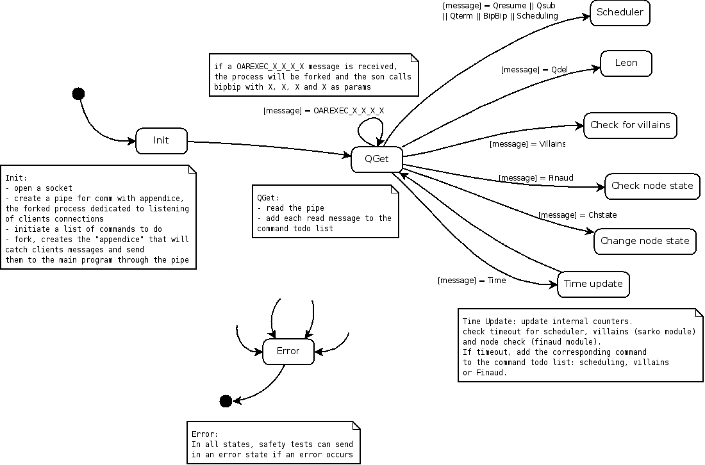
- General schema:
When the Almighty automaton starts it will first open a socket and creates a pipe for the process communication with it's forked son. Then, Almighty will fork itself in a process called "appendice" which role is to listen to incoming connections on the socket and catch clients messages. These messages will be thereafter piped to Almighty. Then, the automaton will change it's state according to what message has been received.
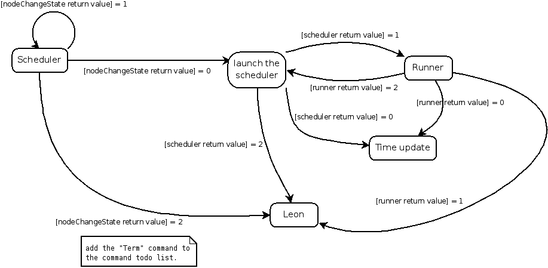
- Scheduler schema:
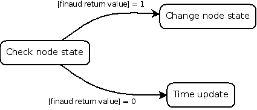
- Finaud schema:
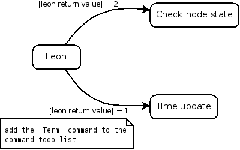
- Leon schema:
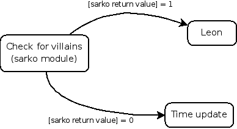
- Sarko schema:
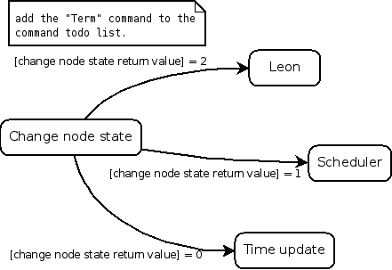
- ChangeNode schema:
7.2 Sarko
This module is executed periodically by the Almighty (default is every 30 seconds).
The jobs of Sarko are :
- Look at running job walltimes and ask to frag them if they had expired.
- Detect if fragged jobs are really fragged otherwise asks to exterminate them.
- In "Desktop Computing" mode, it detects if a node date has expired and asks to change its state into "Suspected".
- Can change "Suspected" resources into "Dead" after DEAD_SWITCH_TIME seconds.
7.3 Judas
This is the module dedicated to print and log every debugging, warning and error messages.
The notification functions are the following:
- send_mail(mail_recipient_address, object, body, job_id) that sends emails to the OAR admin
- notify_user(base, method, host, user, job_id, job_name, tag, comments) that parses the notify method. This method can be a user script or a mail to send. If the "method" field begins with "mail:", notify_user will send an email to the user. If the beginning is "exec:", it will execute the script as the "user".
The main logging functions are the following:
- redirect_everything() this function redirects STDOUT and STDERR into the log file
- oar_debug(message)
- oar_warn(message)
- oar_error(message)
The three last functions are used to set the log level of the message.
7.4 Leon
This module is in charge to delete the jobs. Other OAR modules or commands can ask to kill a job and this is Leon which performs that.
There are 2 frag types :
- normal : Leon tries to connect to the first node allocated for the job and terminates the job.
- exterminate : after a timeout if the normal method did not succeed then Leon notifies this case and clean up the database for these jobs. So OAR doesn't know what occured on the node and Suspects it.
7.5 Runner
This module launches OAR effective jobs. These processes are run asynchronously with all modules.
For each job, the Runner uses OPENSSH_CMD to connect to the first node of the reservation and propagate a Perl script which handles the execution of the user command.
- for each job in "toError" state, answer to the oarsub client: "BAD JOB". This will exit the client with an error code.
- for each job in "toAckReservation" state, try to acknowledge the oarsub client reservation. If runner cannot contact the client, it will frag the job.
- for each job to launch, launch job's bipbip.
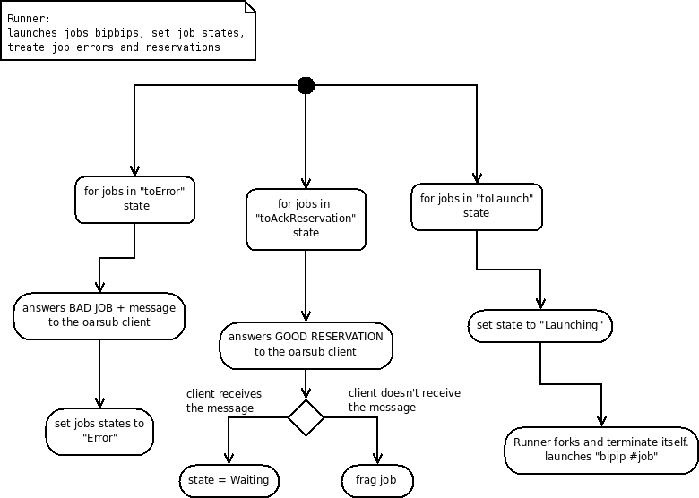
- Runner schema:
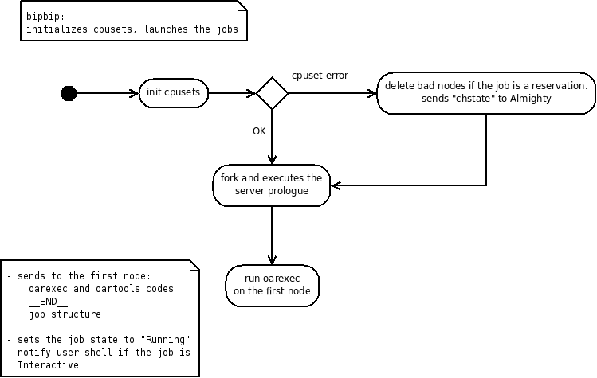
- bipbip schema:
7.6 NodeChangeState
This module is in charge of changing resource states and checking if there are jobs on these.
It also checks all pending events in the table event_logs.
7.7 Scheduler
This module checks for each reservation jobs if it is valid and launches them at the right time.
Scheduler launches all gantt scheduler in the order of the priority specified in the database and update all visualization tables (gantt_jobs_predictions_visu and gantt_jobs_resources_visu).
7.7.1 oar_sched_gantt_with_timesharing
This is the default OAR scheduler. It implements all functionalities like timesharing, moldable jobs, besteffort jobs, ...
By default, this scheduler is used by all default queues.
We have implemented the FIFO with backfilling algorithm. Some parameters can be changed in the configuration file (see SCHEDULER_TIMEOUT, SCHEDULER_JOB_SECURITY_TIME, SCHEDULER_GANTT_HOLE_MINIMUM_TIME, SCHEDULER_RESOURCE_ORDER).
7.7.2 oar_sched_gantt_with_timesharing_and_fairsharing
This scheduler is the same than oar_sched_gantt_with_timesharing but it looks at the consumption past and try to order waiting jobs with fairsharing in mind.
Some parameters can be changed directly in the file:
###############################################################################
# Fairsharing parameters #
##########################
# Avoid problems if there are too many waiting jobs
my $Karma_max_number_of_jobs_treated = 1000;
# number of seconds to consider for the fairsharing
my $Karma_window_size = 3600 * 30;
# specify the target percentages for project names (0 if not specified)
my $Karma_project_targets = {
first => 75,
default => 25
};
# specify the target percentages for users (0 if not specified)
my $Karma_user_targets = {
oar => 100
};
# weight given to each criteria
my $Karma_coeff_project_consumption = 3;
my $Karma_coeff_user_consumption = 2;
my $Karma_coeff_user_asked_consumption = 1;
###############################################################################
This scheduler takes its historical data in the accounting table. To fill this, the command oaraccounting have to be run periodically (in a cron job for example). Otherwise the scheduler cannot be aware of new user consumptions.
7.8 Hulot
This module is responsible of the advanced management of the standby mode of the nodes. It's related to the energy saving features of OAR. It is an optional module activated with the ENERGY_SAVING_INTERNAL=yes configuration variable.
It runs as a fourth "Almighty" daemon and opens a pipe on which it receives commands from the MetaScheduler. It also communicates with a library called "WindowForker" that is responsible of forking shut-down/wake-up commands in a way that not too much commands are started at a time.
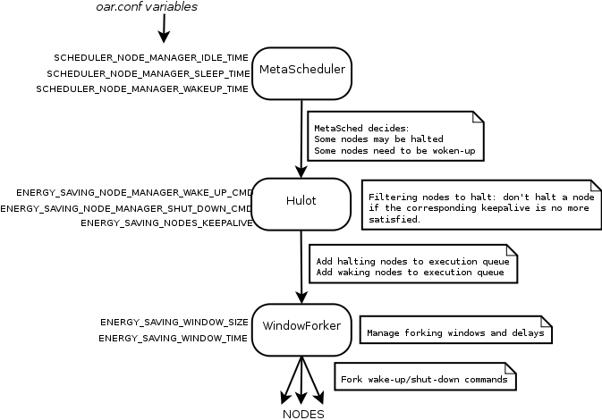
- Hulot general commands process schema:
When Hulot is activated, the metascheduler sends, each time it is executed, a list of nodes that need to be woken-up or may be halted. Hulot maintains a list of commands that have already been sent to the nodes and asks to the windowforker to actually execute the commands only when it is appropriate. A special feature is the "keepalive" of nodes depending on some properties: even if the metascheduler asks to shut-down some nodes, it's up to Hulot to check if the keepalive constraints are still satisfied. If not, Hulot refuses to halt the corresponding nodes.
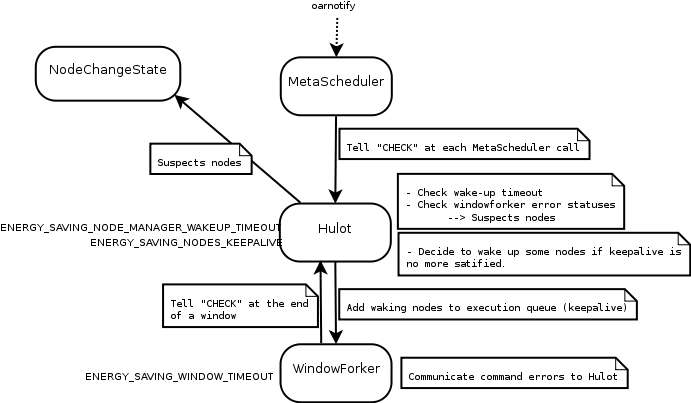
- Hulot checking process schema:
Hulot is called each time the metascheduler is called, to do all the checking process. This process is also executed when Hulot receives normal halt or wake-up commands from the scheduler. Hulot checks if waking-up nodes are actually Alive or not and suspects the nodes if they haven't woken-up before the timeout. It also checks keepalive constraints and decides to wake-up nodes if a constraint is no more satisfied (for example because new jobs are running on nodes that are now busy, and no more idle). Hulot also checks the results of the commands sent by the windowforker and may also suspect a node if the command exited with non-zero status.
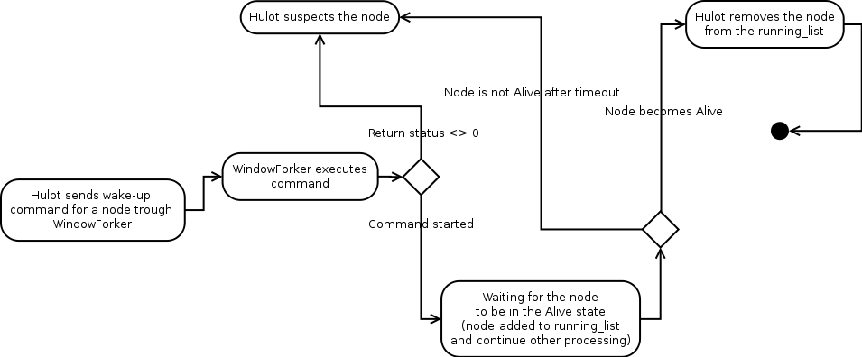
- Hulot wake-up process schema
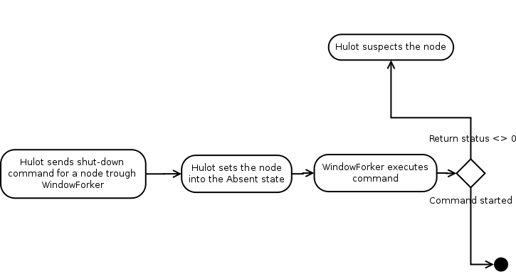
- Hulot shutdown process schema
9 FAQ - ADMIN
9.1 Release policy
- Since the version 2.2, release numbers are divided into 3 parts:
- The first represents the design and the implementation used.
- The second represents a set of OAR functionalities.
- The third is incremented after bug fixes.
9.2 What means the error "Bad configuration option: PermitLocalCommand" when I am using oarsh?
For security reasons, on the latest OpenSSH releases you are able to execute a local command when you are connecting to the remote host and we must deactivate this option because the oarsh wrapper executes the ssh command into the user oar.
So if you encounter this error message it means that your OpenSSH does not know this option and you have to remove it from the oar.conf. There is a variable named OARSH_OPENSSH_DEFAULT_OPTIONS in oar.conf used by oarsh. So you have just to remove the not yet implemented option.
9.3 How to manage start/stop of the nodes?
You have to add a script in /etc/init.d which switches resources of the node into the "Alive" or "Absent" state. So when this script is called at boot time, it will change the state into "Alive". And when it is called at halt time, it will change into "Absent".
There two ways to perform this action:
Install OAR "oar-libs" part on all nodes. Thus you will be able to launch the command oarnodesetting (be careful to right configure "oar.conf" with database login and password AND to allow network connections on this database). So you can execute:
oarnodesetting -s Alive -h node_hostname or oarnodesetting -s Absent -h node_hostnameYou do not want to install anything else on each node. So you have to enable oar user to connect to the server via ssh (for security you can use another SSH key with restrictions on the command that oar can launch with this one). Thus you will have in you init script something like:
sudo -u oar ssh oar-server "oarnodesetting -s Alive -h node_hostname" or sudo -u oar ssh oar-server "oarnodesetting -s Absent -h node_hostname"In this case, further OAR software upgrade will be more painless.
9.5 How can I handle licence tokens?
OAR does not manage resources with an empty "network_address". So you can define resources that are not linked with a real node.
So the steps to configure OAR with the possibility to reserve licences (or whatever you want that are other notions):
Add a new field in the table resources to specify the licence name.
oarproperty -a licence -cAdd your licence name resources with oarnodesetting.
oarnodesetting -a -h "" -p type=mathlab -p licence=l1 oarnodesetting -a -h "" -p type=mathlab -p licence=l2 oarnodesetting -a -h "" -p type=fluent -p licence=l1 ...
After this configuration, users can perform submissions like
oarsub -I -l "/switch=2/nodes=10+{type = 'mathlab'}/licence=20"
So users ask OAR to give them some other resource types but nothing block their program to take more licences than they asked. You can resolve this problem with the SERVER_SCRIPT_EXEC_FILE configuration. In these files you have to bind OAR allocated resources to the licence servers to restrict user consumptions to what they asked. This is very dependant of the licence management.
9.6 How can I handle multiple clusters with one OAR?
These are the steps to follow:
create a resource property to identify the corresponding cluster (like "cluster"):
oarproperty -a cluster(you can see this new property when you use oarnodes)
with oarnodesetting you have to fill this field for all resources; for example:
oarnodesetting -h node42.cluster1.com -p cluster=1 oarnodesetting -h node43.cluster1.com -p cluster=1 oarnodesetting -h node2.cluster2.com -p cluster=2 ...Then you have to restrict properties for new job type. So an admission rule performs this job (this is a SQL syntax to use in a database interpreter):
INSERT IGNORE INTO admission_rules (rule) VALUES (' my $cluster_constraint = 0; if (grep(/^cluster1$/, @{$type_list})){ $cluster_constraint = 1; }elsif (grep(/^cluster2$/, @{$type_list})){ $cluster_constraint = 2; } if ($cluster_constraint > 0){ if ($jobproperties ne ""){ $jobproperties = "($jobproperties) AND cluster = $cluster_constraint"; }else{ $jobproperties = "cluster = $cluster_constraint"; } print("[ADMISSION RULE] Added automatically cluster resource constraint\\n"); } ');Edit the admission rule which checks the right job types and add "cluster1" and "cluster2" in.
So when you will use oarsub to submit a "cluster2" job type only resources with the property "cluster=2" is used. This is the same when you will use the "cluster1" type.
9.7 How to configure a more ecological cluster (or how to make some power consumption economies)?
This feature can be performed with the Dynamic nodes coupling features.
First you have to make sure that you have a command to wake up a computer that is stopped. For example you can use the WoL (Wake on Lan) feature (generally you have to right configure the BIOS and add right options to the Linux Ethernet driver; see "ethtool").
If you want to enable a node to be woke up the next 12 hours:
((DATE=$(date +%s)+3600*12)) oarnodesetting -h host_name -p cm_availability=$DATE
Otherwise you can disable the wake up of nodes (but not the halt) by:
oarnodesetting -h host_name -p cm_availability=1
If you want to disable the halt on a node (but not the wakeup):
oarnodesetting -h host_name -p cm_availability=2147483647
2147483647 = 2^31 - 1 : we take this value as infinite and it is used to disable the halt mechanism.
And if you want to disable the halt and the wakeup:
oarnodesetting -h host_name -p cm_availability=0
Note: In the unstable 2.4 OAR version, cm_availability has been renamed into available_upto.
Your SCHEDULER_NODE_MANAGER_WAKE_UP_CMD must be a script that read node names and translate them into the right wake up command.
So with the right OAR and node configurations you can optimize the power consumption of your cluster (and your air conditioning infrastructure) without drawback for the users.
Take a look at your cluster occupation and your electricity bill to know if it could be interesting for you ;-)
9.8 How to configure temporary UID for each job?
For a better way to handle job processes we introduce the temporary user id feature.
This feature creates a user for each job on assigned nodes. Hence it is possible to clean temporary files, IPC, every generated processes, ... Furthermore a lot of system features could be used like bandwidth management (iptables rules on the user id).
To configure this feature, CPUSET must be activated and the tag JOB_RESOURCE_MANAGER_JOB_UID_TYPE has to be configured in the oar.conf file. The value is the content of the "type" field into the resources table. After that you have to add resources in the database with this type and fill the cpuset field with a unique UID (not used by real users). The maximum number of concurrent jobs is the number of resources of this type.
For example, if you put this in your oar.onf:
JOB_RESOURCE_MANAGER_PROPERTY_DB_FIELD="cpuset" JOB_RESOURCE_MANAGER_JOB_UID_TYPE="user"
Then you can add temporary UID:
oarnodesetting -a -h fake -p cpuset=23000 -p type=user oarnodesetting -a -h fake -p cpuset=23001 -p type=user oarnodesetting -a -h fake -p cpuset=23002 -p type=user ...
You can put what you want in the place of the hostname (here "fake").
The drawback of this feature is that users haven't their UID only their GID.
9.9 How to enable jobs to connect to the frontales from the nodes using oarsh?
First you have to install the node part of OAR on the wanted nodes.
After that you have to register the frontales into the database using oarnodesetting with the "frontal" (for example) type and assigned the desired cpus into the cpuset field; for example:
oarnodesetting -a -h frontal1 -p type=frontal -p cpuset=0 oarnodesetting -a -h frontal1 -p type=frontal -p cpuset=1 oarnodesetting -a -h frontal2 -p type=frontal -p cpuset=0 ...
Thus you will be able to see resources identifier of these resources with oarnodes; try to type:
oarnodes --sql "type='frontal'"
Then put this type name (here "frontal") into the oar.conf file on the OAR server into the tag SCHEDULER_RESOURCES_ALWAYS_ASSIGNED_TYPE.
- Notes:
- if one of these resources become "Suspected" then the scheduling will stop.
- you can disable this feature with oarnodesetting and put these resources into the "Absent" state.
9.10 A job remains in the "Finishing" state, what can I do?
If you have waited more than a couple of minutes (10mn for example) then something wrong occurred (frontal has crashed, out of memory, ...).
So you are able to turn manually a job into the "Error" state by typing with the root user (example with a bash shell):
export OARCONFFILE=/etc/oar/oar.conf perl -e 'use OAR::IO; $db = OAR::IO::connect(); OAR::IO::set_job_state($db,42,"Error")'
(Replace 42 by your job identifier)
10 OAR's scheduler in ocaml
10.1 Intro
The main goal of this scheduler is to provide a better scalabily in comparaison to the schedulers in Perl.Up to now some features are missing see below.
This developement of this scheduler borrows lot of ideas and source codes from perl oar_2.x schedulers and (a large part of) moldable ocaml oar_1.6 scheduler (thanks respectively to Nicolas Capit and Lionel Eyraud for theirs codes).
10.2 Features:
- conservative backfilling
- resources properties matching
- besteffort
- hierarchies
- multiple resource type [TO TEST]
- multiple resource requests ( + ) [TO TEST]
- time constant guards, [TO TEST]
- suspend/resume,
- job depencies [TO TEST]
- job container
- fairesharing [TO TEST]
- order_by on resources [TO FINISH / EVALUATE]
- ALL / BEST / BESTHALF for number of resources by level of hierarchy
10.3 Missing:
- Timesharing (not planned for fisrt public version)
- Placeholder (not planned)
- Extensive test (no yet running on production cluster)
- SCHEDULER_TOKEN_SCRIPTS support (for legacy licence management)
- SCHEDULER_AVAILABLE_SUSPENDED_RESOURCE_TYPE (get_scheduled_jobs function is ready)
10.4 Next:
- Support for null
- test hierarchy construction with different type of resource (exception raises when a field is missing)
- performance testing
- add always SCHEDULER_RESOURCES_ALWAYS_ASSIGNED_TYPE (is it really needed ?)
- SCHEDULER_TOKEN_SCRIPTS support (for legacy licence management)
- scheduler message (see perl version )
- job_error / job_message / scheduler message
- need to test multi-resource-type (since >= cbf_mb_h)
- need to test multi-request with non exclusive resource selection (since >= cbf_mb_h)
- errors logging (at least same error support as provide in perl scheduler)
- dump first k ready launchable jobs (for performance /reactivity issue)
- nb_asked_resource = 0 raise an error (>= cbf_mb_h)
- unit test
- better compilation process (for unit tests)
10.5 ToDo:
- ORDER_BY
- performance test
- production test
- ord2init_ids, init2ord_ids more test
switch name to kamelot
test fairsharing
test_unit: better compilation process
Ounit (cf archive) * test sub_intevals
10.6 Misc:
- With 64 bits machine we can use ocaml's int with 63 bits instead of Int64.
10.7 Done:
- resource order_by support (usable)
- container
- Support of postgresql
- Preliminary performance comparaison (perl version timesharing only scheduler from oar-server_2.3.4-1_all.deb against cbf_mh_h). Perl scheduler doesn't seem to scale with number of resources)
- modify itv_intersect in Interval / remove itv2str, itvs2str (>= cbf_mh_h)
- multi-resource-type (since >= cbf_mh_h) (
- multi-request with non exclusive resource selection (since >= cbf_mh_h)
10.10 Debug:
make bc ocamlmktop -I /usr/lib/ocaml/ -o yop str.cma unix.cma ../common/helpers.cmo ../common/interval.cmo ../common/conf.cmo types.cmo ../common/hierarchy.cmo ./simple_cbf_mb_h_ct.cmo
- ocamlmktop -I /usr/lib/ocaml/ -o yop str.cma unix.cma ../common/helpers.cmo
- ../common/interval.cmo ../common/conf.cmo types.cmo ../common/hierarchy.cmo ./simple_cbf_mb_h_ct.cmo mysql/mysql.cma ./mysql_driver.cmo iolib.cmo ./simple_cbf_mb_h_ct_oar.cmo
- ocamlmktop -I /usr/lib/ocaml/ -o yop str.cma unix.cma ../common/helpers.cmo
- ../common/interval.cmo ../common/conf.cmo types.cmo ../common/hierarchy.cmo ./simple_cbf_mb_h_ct.cmo mysql/mysql.cma ./mysql_driver.cmo iolib.cmo
rlwrap ./yop -I ../common -I .
10.11 What is the syntax of this documentation?
We are using the RST format from the Docutils project. This syntax is easily readable and can be converted into HTML, LaTex or XML.
You can find basic informations on http://docutils.sourceforge.net/docs/user/rst/quickref.html
11 OAR CHANGELOG
11.1 version 2.5.3:
- Add the "Name" field on the main Monika page. This is easier for the users to find there jobs.
- Add MAX_CONCURRENT_JOB_TERMINATIONS into the oar.conf ofthe master. This limits the number of concurrent processes launched by the Almighty when the the jobs finish.
- Bug fix in ssh key feature in oarsub.
- Added --compact, -c option to oarstat (compact view or array jobs)
- Improvements of the API: media upload from html forms, listing of files, security fixes, add of new configuration options, listing of the scheduled nodes into jobs, fixed bad reinitialization of the limit parameter... See OAR-DOCUMENTATION-API-USER for more informations.
11.2 version 2.5.2:
Bugfix: /var/lib/oar/.bash_oar was empty due to an error in the common setup script.
Bugfix: the PINGCHECKER_COMMAND in oar.conf depends now on %%OARDIR%%.
- Bug #13939: the job_resource_manager.pl and job_resource_manager_cgroups.pl
now deletes the user files in /tmp, /var/tmp and /dev/shm at the end of the jobs.
Bugfix: in oardodo.c, the preprocessed variables was not defined correclty.
Finaud: fix race condition when there was a PINGCHECKER error jsut before another problem. The node became Alive again when the PINGCHECKER said OK BUT there was another error to resolve.
Bugfix: The feature CHECK_NODES_WITH_RUNNING_JOB=yes never worked before.
Speedup monika (X5).
Monika: Add the conf max_cores_per_line to have several lines if the number of cores are too big.
- Minor changes into API:
- added cmd_output into POST /jobs.
API: Added GET /select_all?query=<query> (read only mode).
Add the field "array_index" into the jobs table. So that resubmit a job from an array will have the right array_index anvironment variable.
oarstat: order the output by job_id.
Speedup oarnodes.
Fix a spelling error in the oaradmin manpage.
Bugfix #14122 : the oar-node init.d script wasn't executing start_oar_node/stop_oar_node during the 'restart' action.
Allow the dash character into the --notify "exec:..." oarsub option.
- Remove some old stuffs from the tarball:
- visualization_interfaces/{tgoar,accounting,poar};
- scheduler/moldable;
- pbs-oar-lib.
Fix some licence issues.
11.3 version 2.5.1:
Sources directories reorganized
New "Phoenix" tool to try to reboot automatically broken nodes (to setup into /etc/oar/oar_phoenix.pl)
New (experimental!) scheduler written in Ocaml
Cpusets are activated by default
Bugfix #11065: oar_resource_init fix (add a space)
Bug 10999: memory leak into Hulot when used with postgresql. The leak has been minimized, but it is still there (DBD::Pg bug)
Almighty cleans ipcs used by oar on exit
Bugfix #10641 and #10999 : Hulot is automatically and periodically restarted
Feature request #10565: add the possibility to check the aliveness of the nodes of a job at the end of this one (pingchecker)
REST API heavily updated: new data structures with paginated results, desktop computing functions, rspec tests, oaradmin resources management, admission rules edition, relative/absolutes uris fixed
New ruby desktop computing agent using REST API (experimental)
Experimental testsuite
Poar: web portal using the REST API (experimental)
Oaradmin YAML export support for resources creation (for the REST API)
Bugfix #10567: enabling to bypass window mechanism of hulot.
Bugfix #10568: Wake up timeout changing with the number of nodes
Add in oar.conf the tag "RUNNER_SLIDING_WINDOW_SIZE": it allows the runner to use a sliding window to launch the bipbip processes if "DETACH_JOB_FROM_SERVER=1". This feature avoids the overload of the server if plenty of jobs have to be launched at the same time.
Fix problem when deleting a job in the Suspended state (oarexec was stopped by a SIGSTOP so it was not able to handle the delete operation)
Make the USER_SIGNAL feature of oardel multi job independant and remove the temporary file at the end of the job
- Monika: display if the job is of timesharing type or not
add in the job listing the initial_request (is there a reason to not display it?)
- IoLib: update scheduler_priority resources property for timesharing jobs.
So the scheduler will be able to avoid to launch every timesharing jobs on the same resources (they can be dispatched)
OAREXEC: unmask SIGHUP and SIGPIPE for user script
node_change_state: do not Suspect the first node of a job which was EXTERMINATED by Leon if the cpuset feature is configured (let do the job by the cpuset)
OAREXEC: ESRF detected that sometime oarexec think that he notified the Almighty with it exit code but nothing was seen on the server. So try to resend the exit code until oarexec is killed.
oar_Tools: add in notify_almighty a check on the print and on the close of the socket connected to Almighty.
oaraccounting: --sql is now possible into a "oarstat --accounting" query
Add more logs to the command "oarnodes -e host" when a node turns into Suspected
Execute user commands with /proc/self/oom_adj to 15. So the first processes that will be killed when there is no more memory available is the user ones. Hence the system will remain up and running and the user job will finished. Drawback: this file can be changed manually by the user so if someone knows a method to do the same thing but only managed by root, we take???
Bugfix API: quotes where badly escaped into job submission (Ugo.Meda@insa-rennes.fr)
Add the possibility to automatically resubmit idempotent job which ends with an exit code of 99: oarsub -t idempotent "sleep 5; exit 99"
Bugfix API: Some informations where missing into jobs/details, especially the scheduled resources.
API: added support of "param_file" value for array job submissions. This value is a string representing the content of a parameters file. Sample submission:
{"resource":"/cpu=1", "command":"sleep", "param_file":"60\n90\n30"}This submits 3 sleep jobs with differents sleep values.
Remove any reference to gridlibs and gridapi as these components are obselete
Add stdout and stderr files of each job in oarstat output.
API now supports fastcgi (big performance raise!)
Add "-f" option to oarnodesetting to read hostnames from a file.
API can get/upload files (GET or POST /media/<file_path>)
Make "X11 forwarding" working even if the user XAUTHORITY environment variable does not contain ~/.Xauthority (GDM issue).
Add job_resource_manager_cgroups which handles cpuset + other cgroup features like network packet tagging, IO disk shares, ...
Bugfix #13351: now oar_psql_db_init is executed with root privileges
Bugfix #13434: reservation were not handled correctly with the energy saving feature
Add cgroups FREEZER feature to the suspend/resume script (better than kill SIGSTOP/SIGCONT). This is doable thanks to the new job_resource_manager_cgroups.
Implement a new script 'oar-database' to manage the oar database. oar_mysql_init & oar_psql_init are dropped.
Huge code reorganisation to allow a better packaging and system integration
Drop the oarsub/oarstat 2.3 version that was kept for compatiblity issues during the 2.4.x branch.
By default the oar scheduler is now 'oar_sched_gantt_with_timesharing_and_fairsharing' and the following values has been set in oar.conf: SCHEDULER_TIMEOUT to 30, SCHEDULER_NB_PROCESSES to 4 and SCHEDULER_FAIRSHARING_MAX_JOB_PER_USER to 30
Add a limitation on the number of concurrent bipbip processes on the server (for detached jobs).
Add IPC cleaning to the job_resource_manager* when there is no other job of the same user on the nodes.
make better scheduling behaviour for dependency jobs
API: added missing stop_time into /jobs/details
11.4 version 2.4.4:
- oar_resource_init: bad awk delimiter. There's a space and if the property is the first one then there is not a ','.
- job suspend: oardo does not exist anymore (long long time ago). Replace it with oardodo.
- oarsub: when an admission rule died micheline returns an integer and not an array ref. Now oarsub ends nicely.
- Monika: add a link on each jobid on the node display area.
- sshd_config: with nodes with a lot of core, 10 // connections could be too few
11.5 version 2.4.3:
- Hulot module now has customizable keepalive feature
- Added a hook to launch a healing command when nodes are suspected (activate the SUSPECTED_HEALING_EXEC_FILE variable)
- Bugfix #9995: oaraccouting script doesn't freeze anymore when db is unreachable.
- Bugfix #9990: prevent from inserting jobs with invalid username (like an empty username)
- Oarnodecheck improvements: node is not checked if a job is already running
- New oaradmin option: --auto-offset
- Feature request #10565: add the possibility to check the aliveness of the nodes of a job at the end of this one (pingchecker)
11.6 version 2.4.2:
- New "Hulot" module for intelligent and configurable energy saving
- Bug #9906: fix bad optimization in the gantt lib (so bad scheduling
11.7 version 2.4.1:
- Bug #9038: Security flaw in oarsub --notify option
- Bug #9601: Cosystem jobs are no more killed when a resource is set to Absent
- Fixed some packaging bugs
- API bug fixes in job submission parsing
- Added standby info into oarnodes -s and available_upto info into /resources uri of the API
- Bug Grid'5000 #2687 Fix possible crashes of the scheduler.
- Bug fix: with MySQL DB Finaud suspected resources which are not of the "default" type.
- Signed debian packages (install oar-keyring package)
11.8 version 2.4.0:
Bug #8791: added CHECK_NODES_WITH_RUNNING_JOB=no to prevent from checking occupied nodes
Fix bug in oarnodesetting command generated by oar_resources_init (detect_resources)
Added a --state option to oarstat to only get the status of specified jobs (optimized query, to allow scripting)
Added a REST API for OAR and OARGRID
Added JSON support into oarnodes, oarstat and oarsub
New Makefile adapted to build packages as non-root user
add the command "oar_resources_init" to easily detect and initialize the whole resources of a cluster.
"oaradmin version" : now retrieve the most recent database schema number
Fix rights on the "schema" table in postgresql.
Bug #7509: fix bug in add_micheline_subjob for array jobs + jobtypes
Ctrl-C was not working anymore in oarsub. It seems that the signal handler does not handle the previous syntax ($SIG = 'qdel')
Fix bug in oarsh with the "-l" option
Bug #7487: bad initialisation of the gnatt for the container jobs.
Scheduler: move the "delete_unnecessary_subtrees" directly into "find_first_hole". Thus this is possible to query a job like:
oarsub -I -l nodes=1/core=1+nodes=4/core=2 (no hard separation between each group)
- For the same behaviour as before, you can query:
oarsub -I -l {prop=1}/nodes=1/core=1+{prop=2}/nodes=4/core=2
Bug #7634: test if the resource property value is effectively defined otherwise print a ''
Optional script to take into account cpu/core topology of the nodes at boot time (to activate inside oarnodesetting_ssh)
Bug #7174: Cleaned default PATH from "./" into oardodo
Bug #7674: remove the computation of the scheduler_priority field for besteffort jobs from the asynchronous OAR part. Now the value is set when the jobs are turned into toLaunch state and in Error/Terminated.
Bug #7691: add --array and --array-param-file options parsing into the submitted script. Fix also some parsing errors.
Bug #7962: enable resource property "cm_availability" to be manipulated by the oarnodesetting command
- Added the (standby) information to a node state in oarnodes when it's state
is Absent and cm_availability != 0
Changed the name of cm_availability to available_upto which is more relevant
add a --maintenance option to oarnodesetting that sets the state of a resource to Absent and its available_upto to 0 if maintenance is on and resets previous values if maintenance is off.
added a --signal option to oardel that allow a user to send a signal to one of his jobs
added a name field in the schema table that will refer to the OAR version name
added a table containing scheduler name, script and description
Bug #8559: Almighty: Moved OAREXEC_XXXX management code out of the queue for immediate action, to prevent potential problems in case of scheduler timeouts.
oarnodes, oarstat and the REST API are no more making retry connections to the database in case of failure, but exit with an error instead. The retry behavior is left for daemons.
improved packaging (try to install files in more standard places)
improved init script for Almighty (into deb and rpm packages)
fixed performance issue on oarstat (array_id index missing)
fixed performance issue (job_id index missing in event_log table)
fixed a performance issue at job submission (optimized a query and added an index on challenges table) decisions).
11.9 version 2.3.5:
- Bug #8139: Drawgantt nil error (Add condition to test the presence of nil value in resources table.)
- Bug #8416: When a the automatic halt/wakeup feature is enabled then there was a problem to determine idle nodes.
- Debug a mis-initialization of the Gantt with running jobs in the metascheduler (concurrency access to PG database)
11.10 version 2.3.4:
- add the command "oar_resources_init" to easily detect and initialize the whole resources of a cluster.
- "oaradmin version" : now retrieve the most recent database schema number
- Fix rights on the "schema" table in postgresql.
- Bug #7509: fix bug in add_micheline_subjob for array jobs + jobtypes
- Ctrl-C was not working anymore in oarsub. It seems that the signal handler does not handle the previous syntax ($SIG = 'qdel')
- Bug #7487: bad initialisation of the gnatt for the container jobs.
- Fix bug in oarsh with the "-l" option
- Bug #7634: test if the resource property value is effectively defined otherwise print a ''
- Bug #7674: remove the computation of the scheduler_priority field for besteffort jobs from the asynchronous OAR part. Now the value is set when the jobs are turned into toLaunch state and in Error/Terminated.
- Bug #7691: add --array and --array-param-file options parsing into the submitted script. Fix also some parsing errors.
- Bug #7962: enable resource property "cm_availability" to be manipulated by the oarnodesetting command
11.11 version 2.3.3:
Fix default admission rules: case unsensitive check for properties used in oarsub
Add new oaradmin subcommand : oaradmin conf. Useful to edit conf files and keep changes in a Subversion repository.
Kill correctly each taktuk command children in case of a timeout.
New feature: array jobs (option --array) (on oarsub, oarstat oardel, oarhold and oarresume) and file-based parametric array jobs (oarsub --array-param-file) /!in this version the DB scheme has changed. If you want to upgrade your installation from a previous 2.3 release then you have to execute in your database one of these SQL script (stop OAR before):
mysql: DB/mysql_structure_upgrade_2.3.1-2.3.3.sql postgres: DB/pg_structure_upgrade_2.3.1-2.3.3.sql
11.12 version 2.3.2:
- Change scheduler timeout implementation to schedule the maximum of jobs.
- Bug #5879: do not show initial_request in oarstat when it is not a job of the user who launched the oarstat command (oar or root).
- Add a --event option to oarnodes and oarstat to display events recorded for a job or node
- Display reserved resources for a validated waiting reservation, with a hint in their state
- Fix oarproperty: property names are lowercase
- Fix OAR_JOB_PROPERTIES_FILE: do not display system properties
- Add a new user command: oarprint which allow to pretty print resource properties of a job
- Debug temporary job UID feature
- Add 'kill -9' on subprocesses that reached a timeout (avoid Perl to wait something)
- desktop computing feature is now available again. (ex: oarsub -t desktop_computing date)
- Add versioning feature for admission rules with Subversion
11.13 version 2.3.1:
- Add new oarmonitor command. This will permit to monitor OAR jobs on compute nodes.
- Remove sudo dependency and replace it by the commands "oardo" and "oardodo".
- Add possibility to create a temporary user for each jobs on compute nodes. So you can perform very strong restrictions for each job (ex: bandwidth restrictions with iptable, memory management, ... everything that can be handled with a user id)
- Debian packaging: Run OAR specific sshd with root privileges (under heavy load, kernel may be more responsive for root processes...)
- Remove ALLOWED_NETWORKS tag in oar.conf (added more complexeity than resolving problems)
- /!change database scheme for the field exit_code in the table jobs. Now oarstat exit_code line reflects the right exit code of the user passive job (before, even when the user script was not launched the exit_code was 0 which was BAD)
- /!add DB field initial_request in the table jobs that stores the oarsub line of the user
- Feature Request #4868: Add a parameter to specify what the "nodes" resource is a synomym for. Network_address must be seen as an internal data and not used.
- Scheduler: add timeout for each job == 1/4 of the remaining scheduler timeout.
- Bug #4866: now the whole node is Suspected instead of just the par where there is no job onto. So it is possible to have a job on Suspected nodes.
- Add job walltime (in seconds) in parameter of prologue and epilogue on compute nodes.
- oarnodes does not show system properties anymore.
- New feature: container job type now allows to submit inner jobs for a scheduling within the container job
- Monika refactoring and now in the oar packaging.
- Added a table schema in the db with the field version, reprensenting the version of the db schema.
- Added a field DB_PORT in the oar config file.
- Bug #5518: add right initialization of the job user name.
- Add new oaradmin command. This will permit to create resources and manage admission rules more easily.
- Bug #5692: change source code into a right Perl 5.10 syntax.
11.14 version 2.2.12:
- Bug #5239: fix the bug if there are spaces into job name or project
- Fix the bug in Iolib if DEAD_SWITCH_TIME >0
- Fix a bug in bipbip when calling the cpuset_manager to clean jobs in error
- Bug #5469: fix the bug with reservations and Dead resources
- Bug #5535: checks for reservations made at a same time was wrong.
- New feature: local checks on nodes can be plugged in the oarnodecheck mechanism. Results can be asynchronously checked from the server (taktuk ping checker)
- Add 2 new tables to keep track of the scheduling decisions (gantt_jobs_predictions_log and gantt_jobs_resources_log). This will help debugging scheduling troubles (see SCHEDULER_LOG_DECISIONS in oar.conf)
- Now reservations are scheduled only once (at submission time). Resources allocated to a reservations are definitively set once the validated is done and won't change in next scheduler's pass.
- Fix DrawGantt to not display besteffort jobs in the future which is meaningless.
11.15 version 2.2.11:
- Fix Debian package dependency on a CGI web server.
- Fix little bug: remove notification (scheduled start time) for Interactive reservation.
- Fix bug in reservation: take care of the SCHEDULER_JOB_SECURITY_TIME for reservations to check.
- Fix bug: add a lock around the section which creates and feed the OAR cpuset.
- Taktuk command line API has changed (we need taktuk >= 3.6).
- Fix extra ' in the name of output files when using a job name.
- Bug #4740: open the file in oarsub with user privileges (-S option)
- Bug #4787: check if the remote socket is defined (problem of timing with nmap)
- Feature Request #4874: check system names when renaming properties
- DrawGantt can export charts to be reused to build a global multi-OAR view (e.g. DrawGridGantt).
- Bug #4990: DrawGantt now uses the database localtime as its time reference.
11.16 version 2.2.10:
- Job dependencies: if the required jobs do not have an exit code == 0 and in the state Terminated then the schedulers refuse to schedule this job.
- Add the possibility to disable the halt command on nodes with cm_availability value.
- Enhance oarsub "-S" option (more #OAR parsed).
- Add the possibility to use oarsh without configuring the CPUSETs (can be useful for users that don't want to configure there ssh keys)
11.17 version 2.2.9:
- Bug 4225: Dump only 1 data structure when using -X or -Y or -D.
- Bug fix in Finishing sequence (Suspect right nodes).
11.18 version 2.2.8:
- Bug 4159: remove unneeded Dump print from oarstat.
- Bug 4158: replace XML::Simple module by XML::Dumper one.
- Bug fix for reservation (recalculate the right walltime).
- Print job dependencies in oarstat.
11.20 version 2.2.11:
- Fix Debian package dependency on a CGI web server.
- Fix little bug: remove notification (scheduled start time) for Interactive reservation.
- Fix bug in reservation: take care of the SCHEDULER_JOB_SECURITY_TIME for reservations to check.
- Fix bug: add a lock around the section which creates and feed the OAR cpuset.
- Taktuk command line API has changed (we need taktuk >= 3.6).
- Fix extra ' in the name of output files when using a job name.
- Bug #4740: open the file in oarsub with user privileges (-S option)
- Bug #4787: check if the remote socket is defined (problem of timing with nmap)
- Feature Request #4874: check system names when renaming properties
- DrawGantt can export charts to be reused to build a global multi-OAR view (e.g. DrawGridGantt).
- Bug #4990: DrawGantt now uses the database localtime as its time reference.
11.21 version 2.2.10:
- Job dependencies: if the required jobs do not have an exit code == 0 and in the state Terminated then the schedulers refuse to schedule this job.
- Add the possibility to disable the halt command on nodes with cm_availability value.
- Enhance oarsub "-S" option (more #OAR parsed).
- Add the possibility to use oarsh without configuring the CPUSETs (can be useful for users that don't want to configure there ssh keys)
11.22 version 2.2.9:
- Bug 4225: Dump only 1 data structure when using -X or -Y or -D.
- Bug fix in Finishing sequence (Suspect right nodes).
11.23 version 2.2.8:
- Bug 4159: remove unneeded Dump print from oarstat.
- Bug 4158: replace XML::Simple module by XML::Dumper one.
- Bug fix for reservation (recalculate the right walltime).
- Print job dependencies in oarstat.
11.24 version 2.2.7:
- Bug 4106: fix oarsh and oarcp issue with some options (erroneous leading space).
- Bug 4125: remove exit_code data when it is not relevant.
- Fix potential bug when changing asynchronously the state of the jobs into "Terminated" or "Error".
11.25 version 2.2.6:
- Bug fix: job types was not sent to cpuset manager script anymore.
(border effect from bug 4069 resolution)
11.26 version 2.2.5:
- Bug fix: remove user command when oar execute the epilogue script on the nodes.
- Clean debug and mail messages format.
- Remove bad oarsub syntax from oarsub doc.
- Debug xauth path.
- bug 3995: set project correctly when resubmitting a job
- debug 'bash -c' on Fedora
- bug 4069: reservations with CPUSET_ERROR (remove bad hosts and continue with a right integrity in the database)
- bug 4044: fix free resources query for reservation (get the nearest hole from the beginning of the reservation)
- bug 4013: now Dead, Suspected and Absent resources have different colors in drawgantt with a popup on them.
11.27 version 2.2.4:
- Redirect third party commands into oar.log (easier to debug).
- Add user info into drawgantt interface.
- Some bug fixes.
11.28 version 2.2.3:
- Debug prologue and epilogue when oarexec receives a signal.
11.29 version 2.2.2:
- Switch nice value of the user processes into 0 in oarsh_shell (in case of sshd was launched with a different priority).
- debug taktuk zombies in pingchecker and oar_Tools
11.30 version 2.2.1:
- install the "allow_clasic_ssh" feature by default
- debug DB installer
11.31 version 2.2:
- oar_server_proepilogue.pl: can be used for server prologue and epilogue to authorize users to access to nodes that are completely allocated by OAR. If the whole node is assigned then it kills all jobs from the user if all cpus are assigned.
- the same thing can be done with cpuset_manager_PAM.pl as the script used to configure the cpuset. More efficent if cpusets are configured.
- debug cm_availability feature to switch on and off nodes automatically depending on waiting jobs.
- reservations now take care of cm_availability field
11.32 version 2.1.0:
- add "oarcp" command to help the users to copy files using oarsh.
- add sudo configuration to deal with bash. Now oarsub and oarsh have the same behaviour as ssh (the bash configuration files are loaded correctly)
- bug fix in drawgantt (loose jobs after submission of a moldable one)
- add SCHEDULER_RESOURCES_ALWAYS_ASSIGNED_TYPE into oar.conf. Thus admin can add some resources for each jobs (like frontale node)
- add possibility to use taktuk to check the aliveness of the nodes
- %jobid% is now replaced in stdout and stderr file names by the effective job id
- change interface to shu down or wake up nodes automatically (now the node list is read on STDIN)
- add OARSUB_FORCE_JOB_KEY in oar.conf. It says to create a job ssh key by default for each job.
- %jobid% is now replaced in the ssh job key name (oarsub -k ...).
- add NODE_FILE_DB_FIELD_DISTINCT_VALUES in oar.conf that enables the admin to configure the generated containt of the OAR_NODE_FILE
- change ssh job key oarsub options behaviour
- add options "--reinitialize" and "--delete-before" to the oaraccounting command
- cpuset are now stored in /dev/cpuset/oar
- debian packaging: configure and launch a specific sshd for the user oar
- use a file descriptor to send the node list --> able to handle a very large amount of nodes
- every config files are now in /etc/oar/
- oardel can add a besteffort type to jobs and vis versa
11.33 version 2.0.2:
- add warnings and exit code to oarnodesetting when there is a bad node name or resource number
- change package version
- change default behaviour for the cpuset_manager.pl (more portable)
- enable a user to use the same ssh key for several jobs (at his own risk!)
- add node hostnames in oarstat -f
- add --accounting and -u options in oarstat
- bug fix on index fields in the database (syncro): bug 2020
- bug fix about server pro/epilogue: bug 2022
- change the default output of oarstat. Now it is usable: bug 1875
- remove keys in authorized_keys of oar (on the nodes) that do not correspond to an active cpuset (clean after a reboot)
- reread oar.conf after each database connection tries
- add support for X11 forwarding in oarsub -I and -C
- debug mysql initialization script in debian package
- add a variable in oarsh for the default options of ssh to use (more useful to change if the ssh version installed does not handle one of these options)
- read oar.conf in oarsh (so admin can more easily change options in this script)
- add support for X11 forwarding via oarsh
- change variable for oarsh: OARSH_JOB_ID --> OAR_JOB_ID
11.34 version 2.0.0:
Now, with the ability to declare any type of resources like licences, VLAN, IP range, computing resources must have the type default and a network_address not null.
Possibility to declare associated resources like licences, IP ranges, ... and to reserve them like others.
Now you can connect to your jobs (not only for reservations).
Add "cosystem" job type (execute and do nothing for these jobs).
New scheduler : "oar_sched_gantt_with_timesharing". You can specify jobs with the type "timesharing" that indicates that this scheduler can launch more than 1 job on a resource at a time. It is possible to restrict this feature with words "user and name". For example, '-t timesharing=user,name' indicates that only a job from the same user with the same name can be launched in the same time than it.
Add PostGresSQL support. So there is a choice to make between MySQL and PostgresSQL.
New approach for the scheduling : administrators have to insert into the databases descriptions about resources and not nodes. Resources have a network address (physical node) and properties. For example, if you have dual-processor, then you can create 2 different resources with the same natwork address but with 2 different processor names.
The scheduler can now handle resource properties in a hierarchical manner. Thus, for example, you can do "oarsub -l /switch=1/cpu=5" which submit a job on 5 processors on the same switch.
Add a signal handler in oarexec and propagate this signal to the user process.
Support '#OAR -p ...' options in user script.
- Add in oar.conf:
- DB_BASE_PASSWD_RO : for security issues, it is possible to execute request with parts specified by users with a read only account (like "-p" option).
- OARSUB_DEFAULT_RESOURCES : when nothing is specified with the oarsub command then OAR takes this default resource description.
- OAREXEC_DEBUG_MODE : turn on or off debug mode in oarexec (create /tmp/oar/oar.log on nodes).
- FINAUD_FREQUENCY : indicates the frequency when OAR launchs Finaud (search dead nodes).
- SCHEDULER_TIMEOUT : indicates to the scheduler the amount of time after what it must end itself.
- SCHEDULER_JOB_SECURITY_TIME : time between each job.
- DEAD_SWITCH_TIME : after this time Absent and Suspected resources are turned on the Dead state.
- PROLOGUE_EPILOGUE_TIMEOUT : the possibility to specify a different timeout for prologue and epilogue (PROLOGUE_EPILOGUE_TIMEOUT).
- PROLOGUE_EXEC_FILE : you can specify the path of the prologue script executed on nodes.
- EPILOGUE_EXEC_FILE : you can specify the path of the epilogue script executed on nodes.
- GENERIC_COMMAND : a specific script may be used instead of ping to check aliveness of nodes. The script must return bad nodes on STDERR (1 line for a bad node and it must have exactly the same name that OAR has given in argument of the command).
- JOBDEL_SOFTWALLTIME : time after a normal frag that the system waits to retry to frag the job.
- JOBDEL_WALLTIME : time after a normal frag that the system waits before to delete the job arbitrary and suspects nodes.
- LOG_FILE : specify the path of OAR log file (default : /var/log/oar.log).
Add wait() in pingchecker to avoid zombies.
Better code modularization.
Remove node install part to launch jobs. So it is easier to upgrade from one version to an other (oarnodesetting must already be installed on each nodes if we want to use it).
Users can specify a method to be notified (mail or script).
Add cpuset support
Add prologue and epilogue script to be executed on the OAR server before and after launching a job.
Add dependancy support between jobs ("-a" option in oarsub).
In oarsub you can specify the launching directory ("-d" option).
In oarsub you can specify a job name ("-n" option).
In oarsub you can specify stdout and stderr file names.
User can resubmit a job (option "--resubmit" in oarsub).
It is possible to specify a read only database account and it will be used to evaluate SQL properties given by the user with the oarsub command (more scecure).
Add possibility to order assigned resources with their properties by the scheduler. So you can privilege some resources than others (SCHEDULER_RESOURCE_ORDER tag in oar.conf file)
a command can be specified to switch off idle nodes (SCHEDULER_NODE_MANAGER_SLEEP_CMD, SCHEDULER_NODE_MANAGER_IDLE_TIME, SCHEDULER_NODE_MANAGER_SLEEP_TIME in oar.conf)
a command can be specified to switch on nodes in the Absent state according to the resource property cm_availability in the table resources (SCHEDULER_NODE_MANAGER_WAKE_UP_CMD in oar.conf).
if a job goes in Error state and this is not its fault then OAR will resubmit this one.
12 OAR Archives
There are several mini-projects for and around OAR that has been done since the beginning. Some of them are not currently used or are no more relevant. To keep a trace for memories and for the possibility to reuse them if needed, we have created a branche 'archives' in the OAR source repository to keep them. Here are the list of them.